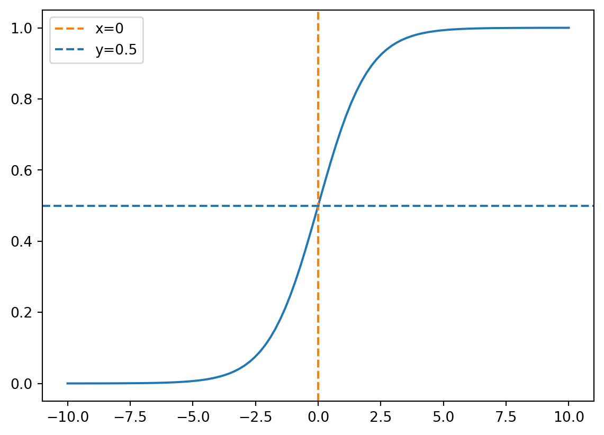
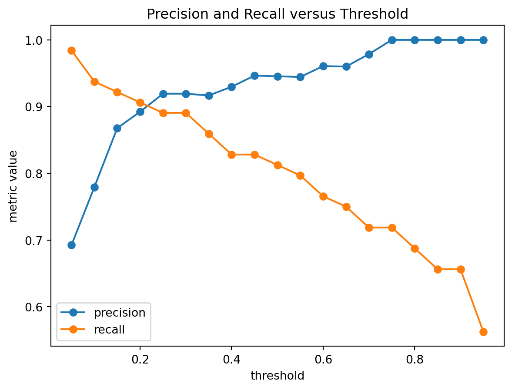
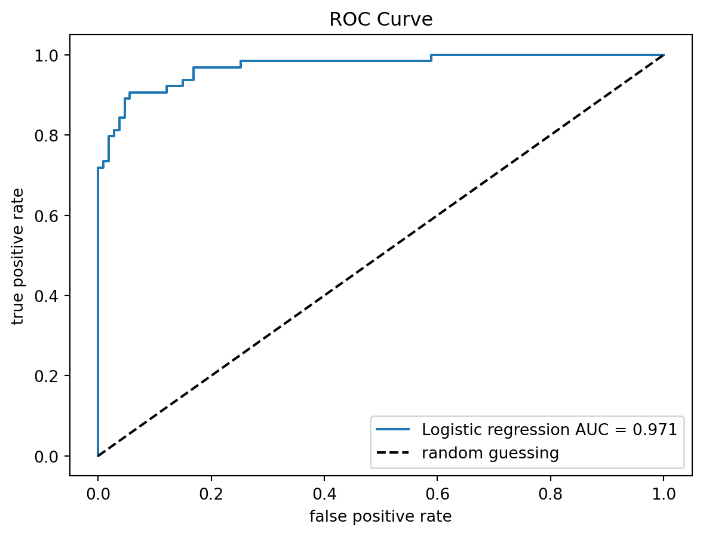

6 Logistic Regression
Logistic regression is a classification method for binary outcomes. It estimates the conditional probability of the positive class and then converts that probability into a class decision only after a threshold is chosen. Many of the materials were already covered in Chapter 2. We provide more details in this section.
6.1 Binary Response
6.1.1 Probability
Suppose \(Y \in \qty{0,1}\). We usually call \(Y=1\) the positive class, success class, or class \(1\), and \(Y=0\) the negative class, failure class, or class \(0\).
For a given predictor vector \(x\), define \[ p(x)=\Pr(Y=1\mid X=x). \] Then \[ \Pr(Y=0\mid X=x)=1-p(x). \]
Note
Any probability is within \([0,1]\). Therefore it is bounded.
6.1.2 Odds
If an event occurs with probability \(p\), its odds are \(\frac{p}{1-p}\). Odds compare the probability that the event occurs with the probability that it does not occur.
For binary classification,
\[ \text{odds of class }1 = \frac{P(Y=1\mid X=x)} {P(Y=0\mid X=x)} = \frac{p(x)} {1-p(x)}. \]
Note
Odds take values in \((0,\infty)\). Comparing to probability, odds remove the upper bound of probability, but they are still restricted to be positive.
6.1.3 Logit and Log-Odds
To remove the positivity restriction of odds, we take a logarithm.
Definition 6.1 (Logit) The logit of a probability \(p\) is
\[ \logit(p)=\log\qty(\frac{p}{1-p}). \]
It is also called the log-odds.
Note
The logit transformation maps probabilities from \((0,1)\) to the entire real line \((-\infty,\infty)\).
Example 6.1
| \(p\) | Odds | Logit | Interpretation |
|---|---|---|---|
| \(0.10\) | \(1/9\) | \(\log(1/9)\approx -2.197\) | Failure is much more likely than success |
| \(0.50\) | \(1\) | \(0\) | Success and failure are equally likely |
| \(0.75\) | \(3\) | \(\log(3)\approx 1.099\) | Success is three times as likely as failure |
| \(0.90\) | \(9\) | \(\log(9)\approx 2.197\) | Success is nine times as likely as failure |
6.2 The Logistic Regression Model
Logistic regression assumes that the log-odds are linear in the predictors:
\[ \logit(p(x))=\beta_0+\beta_1x_1+\cdots+\beta_p x_p. \]
Equivalently,
\[ \log\qty(\frac{p(x)}{1-p(x)})=\beta_0+\beta_1x_1+\cdots+\beta_p x_p. \]
This is the main equation of logistic regression.
6.2.1 From Log-Odds Back to Probability
Starting from
\[ \log\qty(\frac{p(x)}{1-p(x)})=\beta_0+\beta_1x_1+\cdots+\beta_p x_p=x^\top\beta, \]
exponentiating both sides gives
\[ \frac{p(x)}{1-p(x)}= \exp(x^\top\beta). \]
Solving for \(p(x)\) gives
\[ p(x)= \frac{\exp(x^\top\beta)}{1+\exp(x^\top\beta)}=\frac{1}{1+\exp(-x^\top\beta)}. \]
Definition 6.2 (The Sigmoid function) Define \[ \sigma(z)=\frac{1}{1+\exp(-z)}. \] This is the Sigmoid function, also called the logistic function.
With this definition, the logistic regression can be written as
\[ p(x)=\sigma(x^\top\beta)=\sigma(\beta_0+\beta_1x_1+\cdots+\beta_p x_p=x^\top\beta). \]
The logistic function has several important properties.
- \(0<\sigma(z)<1\). So it always produces a valid probability for every real number \(z\).
- It is increasing: \(z_1<z_2\quad\Rightarrow\quad\sigma(z_1)<\sigma(z_2)\).
- \(p(x)\) is \[ \begin{cases} \text{close to }0,&\text{ if }x^\top\beta<<0,\\ 0,&\text{ if }x^\top\beta=0,\\ \text{close to }1,&\text{ if }x^\top\beta>>0. \end{cases} \]
The curve is displayed as follows.
6.2.2 Logistic Regression as a Linear Classifier
Logistic regression produces probabilities, therefore it can also be used for classification.
Using the common threshold \(t=0.5\), we predict
\[ \hat y = \begin{cases} 1,& p(x)\ge 0.5,\\ 0,& p(x)<0.5. \end{cases} \]
Since
\[ p(x)\ge 0.5 \iff x^\top\beta\ge 0, \]
the classification rule becomes
\[ \hat y = \begin{cases} 1,& x^\top\beta\ge 0,\\ 0,& x^\top\beta<0. \end{cases} \]
Therefore, the decision boundary is
\[ x^\top\beta=0. \]
This is a line in two dimensions, a plane in three dimensions, and a hyperplane in higher dimensions. Thus logistic regression is a linear classifier: Even though the probability curve is nonlinear, the decision boundary is linear in the original predictor space.
6.3 Interpretations
6.4 Why Not Linear Regression?
A natural first attempt is to model the probability directly:
\[ p(x)=\beta_0+\beta_1x_1+\cdots+\beta_p x_p. \]
This is called a linear probability model.
The problem is that a linear function can produce values smaller than \(0\) or greater than \(1\). Such values cannot be interpreted as probabilities.
For example, a fitted value such as
\[ \hat p(x)=1.23 \]
or
\[ \hat p(x)=-0.18 \]
is not meaningful as a probability.
Therefore, we want a model that:
- produces values between \(0\) and \(1\);
- keeps a linear structure in the predictors;
- allows useful coefficient interpretation.
Logistic regression achieves this by moving from probability to odds and then to log-odds.
6.5 Probability
A probability satisfies
\[ 0\le p\le 1. \]
For binary classification, the probability of interest is usually
\[ p(x)=P(Y=1\mid X=x). \]
Examples:
| Probability | Interpretation |
|---|---|
| \(0\) | impossible |
| \(0.5\) | equally likely |
| \(1\) | certain |
Probabilities are easy to understand, but their bounded range makes them hard to model directly with a linear function.
6.6 Odds
6.7 Geometric Interpretation
The equation
\[ x^\top\beta=0 \]
defines a separating hyperplane.
The vector
\[ \beta \]
determines the orientation of the hyperplane.
The intercept
\[ \beta_0 \]
shifts the hyperplane.
Points on one side of the hyperplane have
\[ x^\top\beta>0, \]
so they are predicted as class \(1\) under the \(0.5\) threshold.
Points on the other side have
\[ x^\top\beta<0, \]
so they are predicted as class \(0\).
This connects logistic regression to other linear classification methods such as perceptrons, linear support vector machines, and linear discriminant analysis.
6.8 Interpreting the Coefficients
Suppose all other predictors are held fixed.
Increasing \(x_j\) by one unit changes the linear predictor by
\[ \beta_j. \]
Because the linear predictor is the log-odds, increasing \(x_j\) by one unit changes the log-odds by
\[ \beta_j. \]
Thus:
- if \(\beta_j>0\), increasing \(x_j\) increases the log-odds of class \(1\);
- if \(\beta_j<0\), increasing \(x_j\) decreases the log-odds of class \(1\);
- if \(\beta_j=0\), increasing \(x_j\) does not change the log-odds.
6.9 Odds Ratios
Since
\[ \beta_j \]
is a change in log-odds, exponentiating gives a multiplicative change in odds.
Definition 6.3 (Odds Ratio) For a one-unit increase in \(x_j\), holding all other predictors fixed, the odds are multiplied by
\[ \exp(\beta_j). \]
The quantity
\[ \exp(\beta_j) \]
is called the odds ratio.
6.9.1 Example
Suppose
\[ \beta_j=0.08. \]
Then
\[ \exp(0.08)\approx 1.083. \]
A one-unit increase in \(x_j\) multiplies the odds by approximately \(1.083\).
Equivalently, the odds increase by approximately
\[ 8.3\%. \]
6.9.2 Important Warning
The coefficient \(\beta_j\) is not a direct change in probability.
The probability change depends on the current value of
\[ x^\top\beta \]
or equivalently the current probability
\[ p(x). \]
For the same value of \(\beta_j\), the probability change can be small when \(p(x)\) is already close to \(0\) or close to \(1\), and larger when \(p(x)\) is near \(0.5\).
6.10 Probability, Odds, and Log-Odds
The three scales are related but different.
| Scale | Formula | Range |
|---|---|---|
| Probability | \(p\) | \([0,1]\) |
| Odds | \(\frac{p}{1-p}\) | \([0,\infty)\) |
| Log-odds | \(\log\left(\frac{p}{1-p}\right)\) | \((-\infty,\infty)\) |
Logistic regression is easiest to interpret on the log-odds scale, but its predictions are usually reported on the probability scale.
6.11 From Probability to Classification
Logistic regression outputs a probability:
\[ p(x)=P(Y=1\mid X=x). \]
To convert this probability into a class label, we choose a threshold \(t\):
\[ \hat y = \begin{cases} 1,& p(x)\ge t,\\ 0,& p(x)<t. \end{cases} \]
The most common threshold is
\[ t=0.5. \]
However, this is not always the best threshold.
For example, in medical screening, a false negative may be much more costly than a false positive. In that case, we may choose a lower threshold to classify more patients as positive.
In fraud detection, we may also choose a threshold based on the cost of investigating suspicious cases and the cost of missing fraud.
The topics of confusion matrices, precision, recall, ROC curves, AUC, and cost-sensitive threshold selection are discussed elsewhere. Here the key point is:
Logistic regression gives probabilities first; classification decisions require an additional threshold.
6.12 Maximum Likelihood Estimation
Logistic regression is usually fit using maximum likelihood estimation.
For each observation,
\[ Y_i\mid X_i=x_i \sim \operatorname{Bernoulli}(p_i), \]
where
\[ p_i = p(x_i) = \frac{1} {1+\exp(-x_i^\top\beta)}. \]
The probability mass function of a Bernoulli random variable is
\[ P(Y_i=y_i) = p_i^{y_i}(1-p_i)^{1-y_i}, \]
where
\[ y_i\in\{0,1\}. \]
Assuming independent observations, the likelihood function is
\[ L(\beta) = \prod_{i=1}^{n} p_i^{y_i}(1-p_i)^{1-y_i}. \]
The log-likelihood is
\[ \ell(\beta) = \sum_{i=1}^{n} \left[ y_i\log(p_i) + (1-y_i)\log(1-p_i) \right]. \]
The maximum likelihood estimate is
\[ \hat\beta = \arg\max_{\beta}\ell(\beta). \]
Unlike ordinary least squares, there is no simple closed-form solution for \(\hat\beta\). In practice, numerical optimization methods are used.
6.13 Connection to Cross-Entropy and Log Loss
The negative log-likelihood is
\[ -\ell(\beta) = -\sum_{i=1}^{n} \left[ y_i\log(p_i) + (1-y_i)\log(1-p_i) \right]. \]
In machine learning, this is called binary cross-entropy loss or log loss.
Thus logistic regression is not just a classification model. It is also a probabilistic model trained by minimizing a loss function that rewards accurate probability estimates.
This connects logistic regression to modern machine learning methods, including neural networks, which often use cross-entropy loss for classification.
6.14 Logistic Regression as a Single Neuron
A logistic regression model can be viewed as a single sigmoid neuron.
First compute a linear score:
\[ z=x^\top\beta. \]
Then apply the sigmoid function:
\[ p=\sigma(z) = \frac{1}{1+\exp(-z)}. \]
Thus the model has the form
\[ x \longmapsto x^\top\beta \longmapsto \sigma(x^\top\beta) \longmapsto p(x). \]
This is essentially a neural network with:
- no hidden layers;
- one output unit;
- sigmoid activation;
- binary cross-entropy loss.
This perspective helps connect classical statistics with modern neural networks.
6.15 Logistic Regression and Probability Calibration
Logistic regression often gives probability estimates that are easier to interpret than the raw scores from many classification algorithms.
A predicted probability such as
\[ p(x)=0.8 \]
means that the model estimates an \(80\%\) chance of class \(1\).
A model is well calibrated if, among observations assigned probability close to \(0.8\), approximately \(80\%\) truly belong to class \(1\).
Calibration is different from classification accuracy. A model may classify many observations correctly but still produce poorly calibrated probabilities.
Calibration curves, Brier score, and log loss are discussed in the model evaluation chapter. Here the main point is:
Logistic regression is naturally probabilistic, so its output can be evaluated as a probability, not only as a class label.
6.16 Logistic Regression vs. Naive Bayes
Logistic regression and naive Bayes can both be used for classification, but they take different modeling approaches.
Naive Bayes is a generative model. It models how the predictors are generated within each class:
\[ P(X\mid Y). \]
Together with the class prior
\[ P(Y), \]
it uses Bayes’ rule to compute
\[ P(Y\mid X). \]
Logistic regression is a discriminative model. It directly models
\[ P(Y\mid X). \]
In practice:
- naive Bayes can work well with strong independence assumptions and small data;
- logistic regression often performs better when the goal is direct prediction of class probabilities.
This distinction between generative and discriminative modeling appears throughout machine learning.
6.17 Regularized Logistic Regression
When there are many predictors, logistic regression can overfit.
A common solution is to add regularization.
6.17.1 Ridge Logistic Regression
Ridge logistic regression penalizes large coefficients using an \(L^2\) penalty:
\[ -\ell(\beta) + \lambda\sum_{j=1}^{p}\beta_j^2. \]
This shrinks coefficients toward zero but usually does not set them exactly to zero.
6.17.2 Lasso Logistic Regression
Lasso logistic regression uses an \(L^1\) penalty:
\[ -\ell(\beta) + \lambda\sum_{j=1}^{p}|\beta_j|. \]
This can shrink some coefficients exactly to zero, producing a simpler model.
Regularization is especially useful when:
- the number of predictors is large;
- predictors are correlated;
- prediction accuracy is more important than classical inference.
Regularization methods are discussed in more detail in the chapter on shrinkage methods.
6.18 Multiclass Extension
The basic logistic regression model handles binary outcomes.
For more than two classes, one common extension is multinomial logistic regression.
Suppose
\[ Y\in\{1,2,\ldots,K\}. \]
Multinomial logistic regression models class probabilities
\[ P(Y=k\mid X=x) \]
for each class \(k\).
A common form is the softmax model:
\[ P(Y=k\mid X=x) = \frac{\exp(\eta_k(x))} {\sum_{\ell=1}^{K}\exp(\eta_\ell(x))}. \]
Here each class has its own linear predictor
\[ \eta_k(x). \]
This is the multiclass analogue of the sigmoid function.
6.19 Advantages of Logistic Regression
Logistic regression has several strengths.
- It is simple.
- It is fast to fit.
- It produces probabilities.
- It is interpretable through log-odds and odds ratios.
- It works well when the log-odds are approximately linear in the predictors.
- It connects naturally to maximum likelihood, cross-entropy loss, and neural networks.
6.20 Limitations of Logistic Regression
Logistic regression also has limitations.
- It assumes a linear relationship between predictors and log-odds.
- It cannot automatically capture complex nonlinear patterns.
- It may perform poorly when important interactions are missing.
- It can be sensitive to outliers or separation.
- It may require feature engineering to perform well on complicated data.
More flexible methods such as trees, random forests, boosting, and neural networks can capture nonlinear effects more automatically. However, logistic regression remains an important baseline because of its simplicity, speed, and interpretability.
6.21 Complete Separation
A technical issue can occur when the classes are perfectly separable by a linear boundary.
In that case, the likelihood can keep increasing as some coefficients become larger and larger in magnitude. This is called complete separation.
When complete separation occurs, the maximum likelihood estimates may not be finite.
Regularization can help stabilize the estimates.
6.22 Historical Note
The logistic curve was introduced by Pierre-François Verhulst in 1838 while studying population growth.
The term logit was introduced by Joseph Berkson in 1944. Berkson used the word logit for the logarithm of the odds and advocated the logistic function in bioassay problems.
Logistic regression later became a central example of generalized linear models. In GLM terminology, logistic regression uses:
- Bernoulli response distribution;
- logit link function;
- linear predictor \(x^\top\beta\).
6.23 Summary
Logistic regression models binary outcomes by modeling the log-odds as a linear function of the predictors:
\[ \log\left( \frac{p(x)} {1-p(x)} \right) = x^\top\beta. \]
Equivalently, the predicted probability is
\[ p(x) = \frac{1} {1+\exp(-x^\top\beta)}. \]
The model is useful because it:
- produces valid probabilities;
- has interpretable coefficients;
- gives a linear decision boundary;
- can be fit by maximum likelihood;
- connects to cross-entropy loss and neural networks.
Logistic regression is one of the most important bridges between classical statistics and modern machine learning.
6.24 References
@article{verhulst1838,
author = {Pierre-François Verhulst},
title = {Notice sur la loi que la population poursuit dans son accroissement},
journal = {Correspondance Mathématique et Physique},
year = {1838},
volume = {10},
pages = {113--121}
}
@article{berkson1944,
author = {Joseph Berkson},
title = {Application of the Logistic Function to Bio-Assay},
journal = {Journal of the American Statistical Association},
year = {1944},
volume = {39},
number = {227},
pages = {357--365}
}
@book{mccullagh1989,
author = {McCullagh, Peter and Nelder, John A.},
title = {Generalized Linear Models},
edition = {2},
year = {1989},
publisher = {Chapman and Hall}
}
@book{hosmer2013,
author = {Hosmer, David W. and Lemeshow, Stanley and Sturdivant, Rodney X.},
title = {Applied Logistic Regression},
edition = {3},
year = {2013},
publisher = {Wiley}
}
@book{agresti2018,
author = {Agresti, Alan},
title = {An Introduction to Categorical Data Analysis},
edition = {3},
year = {2018},
publisher = {Wiley}
}7 Logistic Regression
Logistic regression is a classification method for binary outcomes. It estimates the conditional probability of the positive class and then converts that probability into a class decision only after a threshold is chosen. Many of the materials were covered in ?sec-cls_dec. We provide more details here.
For a binary response, \[ Y\in\{0,1\}, \] the target is \[ p(x)=\Pr(Y=1\mid x). \]
Logistic regression estimates \(p(x)\). A threshold turns \(\hat p(x)\) into a class label. As discussed in Chapter 2, estimating probabilities and making decisions are related but distinct tasks.
7.1 The Logistic Model
7.1.1 Odds and Coefficients
Let the probability that \(Y\) equals \(1\) be \(p\). Then the odds of class \(1\) are
\[ \frac{p}{1-p}. \]
Definition 7.1 (Logit) The logit of \(Y\) is
\[ \logit(x)=\ln\qty(\frac{p(x)}{1-p(x)}). \]
Holding the other predictors fixed, increasing \(x_j\) by one unit changes the log-odds by \(\beta_j\). Exponentiating gives the odds ratio \[ \frac{\text{new odds}}{\text{old odds}} = \exp(\beta_j). \]
Thus \(\beta_j\) is a change in log-odds, while \(\exp(\beta_j)\) is a multiplicative change in odds. It is not a direct change in probability, because the probability change also depends on the current value of \(x^\top\beta\).
For example, if \(\beta_j=0.05\), then \[ \exp(0.05)\approx 1.051, \] so a one-unit increase in \(x_j\) multiplies the odds by about \(1.051\).
A linear regression model is not appropriate if its fitted value is interpreted as a probability, because a linear function can be less than \(0\) or greater than \(1\).
Logistic regression keeps the linear predictor \[ \eta(x)=\beta_0+\beta_1x_1+\cdots+\beta_px_p=x^\top\beta, \] where \(x\) includes a leading \(1\) when the intercept is included, but maps it through the logistic function: \[ p(x) = \frac{\exp\{\eta(x)\}}{1+\exp\{\eta(x)\}} = \frac{1}{1+\exp\{-\eta(x)\}}. \] Thus \(0<p(x)<1\) for every value of \(x\).
Equivalently, the log-odds are linear: \[ \log\left(\frac{p(x)}{1-p(x)}\right) = x^\top\beta. \]
7.1.2 One-Variable Example
Suppose the fitted model is \[ \log\left(\frac{p(x)}{1-p(x)}\right) = -3.006+0.052x. \] For \(x=55\), \[ \eta(55)=-3.006+0.052(55)=-0.146. \] The estimated probability is \[ \hat p(55) = \frac{\exp(-0.146)}{1+\exp(-0.146)} \approx 0.463. \]
7.2 Maximum Likelihood Estimation
For observation \(i\), let \[ p_i=p(x_i) = \frac{\exp(x_i^\top\beta)}{1+\exp(x_i^\top\beta)}. \] The model assumes \[ Y_i\mid x_i \sim \operatorname{Bernoulli}(p_i), \] so \[ \Pr(Y_i=y_i\mid x_i) = p_i^{y_i}(1-p_i)^{1-y_i}. \]
For independent observations, the likelihood is \[ L(\beta) = \prod_{i=1}^n p_i^{y_i}(1-p_i)^{1-y_i}, \] and the log-likelihood is \[ \ell(\beta) = \sum_{i=1}^n \left[ y_i\log(p_i)+(1-y_i)\log(1-p_i) \right]. \]
Using the logistic form of \(p_i\), this can also be written as \[ \ell(\beta) = \sum_{i=1}^n \left[ y_i x_i^\top\beta - \log\{1+\exp(x_i^\top\beta)\} \right]. \]
The logistic regression estimator is \[ \hat\beta = \arg\max_\beta \ell(\beta) = \arg\min_\beta \{-\ell(\beta)\}. \] The negative average log-likelihood, \[ -\frac1n\ell(\beta) = -\frac1n \sum_{i=1}^n \left[ y_i\log(p_i)+(1-y_i)\log(1-p_i) \right], \] is the binary cross-entropy loss.
Unlike ordinary least squares, logistic regression has no closed-form estimator like \(\hat\beta_{\ols}\). The coefficients are found by numerical optimization.
Let \(X\) be the design matrix, \(y=(y_1,\ldots,y_n)^\top\), and \(p=(p_1,\ldots,p_n)^\top\). The score vector is \[ \nabla_\beta \ell(\beta)=X^\top(y-p), \] and the Hessian is \[ \nabla_\beta^2\ell(\beta)=-X^\top W X, \qquad W=\operatorname{diag}\{p_i(1-p_i)\}. \] Since this Hessian is negative semidefinite, \(\ell(\beta)\) is concave in \(\beta\). This makes Newton-type algorithms and iteratively reweighted least squares natural fitting methods.
7.3 Deviance
In logistic regression and other generalized linear models, deviance measures lack of fit relative to a saturated model. For a fitted logistic regression model, \[ D = -2\ell(\hat\beta) + 2\ell_{\text{saturated}}. \] For Bernoulli data, the saturated model fits each observation perfectly and has \(\ell_{\text{saturated}}=0\), so \[ D=-2\ell(\hat\beta). \]
The null deviance uses an intercept-only model. The residual deviance uses the fitted model with predictors. A large reduction from null deviance to residual deviance indicates that the predictors explain useful information about the class probabilities.
7.4 From Probabilities to Decisions
After fitting the model, a hard classification requires a threshold \(c\): \[ \hat Y = \begin{cases} 1, & \hat p(x)>c,\\ 0, & \hat p(x)\le c. \end{cases} \]
The common default is \(c=0.5\), but the best threshold depends on the goal. Changing \(c\) changes the confusion matrix and therefore changes accuracy, precision, recall, false positive rate, and F1 score. It does not change the fitted probabilities.
If false positives cost \(C_{FP}\) and false negatives cost \(C_{FN}\), and \(\hat p(x)\) is calibrated, then the expected costs are \[ \text{Cost}(1\mid x) = C_{FP}\{1-p(x)\}, \qquad \text{Cost}(0\mid x) = C_{FN}p(x). \] Predict class \(1\) when \(\text{Cost}(1\mid x)<\text{Cost}(0\mid x)\). Solving gives the cost-based threshold \[ c^* = \frac{C_{FP}}{C_{FP}+C_{FN}}. \] If false negatives are more costly, then \(C_{FN}\) is large and \(c^*\) is smaller.
The general ideas behind classification thresholds, error costs, and threshold-based metrics are discussed in Chapter 2. Here we focus on how those ideas appear for logistic regression.
7.5 Logistic Regression in sklearn
For predictive workflows we usually use sklearn, because it works naturally with train-test splits, pipelines, cross-validation, and tuning.
The example below uses the breast cancer data. The original target codes malignant tumors as 0 and benign tumors as 1, so we define y = 1 - cancer.target to make malignant the positive class.
import numpy as np
import pandas as pd
from sklearn.datasets import load_breast_cancer
from sklearn.model_selection import train_test_split
from sklearn.pipeline import make_pipeline
from sklearn.preprocessing import StandardScaler
from sklearn.linear_model import LogisticRegression
cancer = load_breast_cancer(as_frame=True)
X = cancer.data[["mean radius", "mean texture", "mean concavity"]]
y = 1 - cancer.target
X_train, X_test, y_train, y_test = train_test_split(
X,
y,
test_size=0.3,
stratify=y,
random_state=1,
)
logit = make_pipeline(
StandardScaler(),
LogisticRegression(penalty=None, max_iter=5000),
)
logit.fit(X_train, y_train)
test_prob = logit.predict_proba(X_test)[:, 1]
test_pred = logit.predict(X_test)D:\Codes\Notes\su26\.venv\Lib\site-packages\sklearn\linear_model\_logistic.py:1135: FutureWarning: 'penalty' was deprecated in version 1.8 and will be removed in 1.10. To avoid this warning, leave 'penalty' set to its default value and use 'l1_ratio' or 'C' instead. Use l1_ratio=0 instead of penalty='l2', l1_ratio=1 instead of penalty='l1', and C=np.inf instead of penalty=None.
warnings.warn(predict_proba() returns estimated class probabilities. The second column is the estimated probability of the positive class.
logit.predict_proba(X_test[:5])array([[9.97324773e-01, 2.67522723e-03],
[6.19687503e-01, 3.80312497e-01],
[1.58637887e-06, 9.99998414e-01],
[9.99826965e-01, 1.73035413e-04],
[9.99753274e-01, 2.46725763e-04]])predict() returns class labels using the default threshold \(0.5\).
CautionRegularization default
sklearn.linear_model.LogisticRegression uses regularization by default. Use penalty=None for an unpenalized logistic regression.
7.6 Confusion Matrix and Metrics
Threshold-based metrics compare true labels with predicted labels.
See Chapter 2 for the definitions and interpretation of accuracy, precision, recall, and F1 score. In this section we compute them for the fitted logistic regression model.
from sklearn.metrics import (
confusion_matrix,
accuracy_score,
precision_score,
recall_score,
f1_score,
)
confusion_matrix(y_test, test_pred)array([[104, 3],
[ 12, 52]])Since class \(0\) is negative and class \(1\) is positive, the entries are ordered as \[ \begin{pmatrix} TN & FP\\ FN & TP \end{pmatrix}. \]
TN, FP, FN, TP = confusion_matrix(y_test, test_pred).ravel()
basic_metrics = {
"accuracy": accuracy_score(y_test, test_pred),
"precision": precision_score(y_test, test_pred),
"recall": recall_score(y_test, test_pred),
"f1": f1_score(y_test, test_pred),
}
basic_metrics{'accuracy': 0.9122807017543859,
'precision': 0.9454545454545454,
'recall': 0.8125,
'f1': 0.8739495798319328}To use a different threshold, apply it directly to the estimated probabilities.
threshold = 0.3
pred_03 = (test_prob >= threshold).astype(int)
confusion_matrix(y_test, pred_03)array([[102, 5],
[ 7, 57]])A small helper function makes threshold comparisons easier.
def classification_summary(y_true, prob, threshold=0.5):
pred = (prob >= threshold).astype(int)
TN, FP, FN, TP = confusion_matrix(y_true, pred).ravel()
return {
"threshold": threshold,
"TP": TP,
"FP": FP,
"FN": FN,
"TN": TN,
"accuracy": accuracy_score(y_true, pred),
"precision": precision_score(y_true, pred, zero_division=0),
"recall": recall_score(y_true, pred, zero_division=0),
"f1": f1_score(y_true, pred, zero_division=0),
}thresholds = np.linspace(0.05, 0.95, 19)
threshold_df = pd.DataFrame(
[
classification_summary(y_test, test_prob, threshold=t)
for t in thresholds
]
)
threshold_df.head()| threshold | TP | FP | FN | TN | accuracy | precision | recall | f1 | |
|---|---|---|---|---|---|---|---|---|---|
| 0 | 0.05 | 62 | 22 | 2 | 85 | 0.859649 | 0.738095 | 0.968750 | 0.837838 |
| 1 | 0.10 | 59 | 13 | 5 | 94 | 0.894737 | 0.819444 | 0.921875 | 0.867647 |
| 2 | 0.15 | 58 | 8 | 6 | 99 | 0.918129 | 0.878788 | 0.906250 | 0.892308 |
| 3 | 0.20 | 57 | 6 | 7 | 101 | 0.923977 | 0.904762 | 0.890625 | 0.897638 |
| 4 | 0.25 | 57 | 5 | 7 | 102 | 0.929825 | 0.919355 | 0.890625 | 0.904762 |
import matplotlib.pyplot as plt
plt.plot(threshold_df["threshold"], threshold_df["precision"], marker="o", label="precision")
plt.plot(threshold_df["threshold"], threshold_df["recall"], marker="o", label="recall")
plt.xlabel("threshold")
plt.ylabel("metric value")
plt.title("Precision and Recall versus Threshold")
plt.legend()
As the threshold increases, the classifier becomes more conservative in predicting the positive class. This often reduces false positives and increases precision, but it may also increase false negatives and reduce recall.
7.6.1 Selecting a Threshold
The final test set should not be used to choose a threshold. A common workflow is:
- split the training data into a model-training set and a validation set;
- fit the logistic regression model on the model-training set;
- choose the threshold on the validation set;
- evaluate once on the test set.
This is the same distinction between model tuning and threshold tuning described in Chapter 2.
The following example chooses the threshold that maximizes validation F1 score.
X_model, X_valid, y_model, y_valid = train_test_split(
X_train,
y_train,
test_size=0.25,
stratify=y_train,
random_state=11,
)
validation_model = make_pipeline(
StandardScaler(),
LogisticRegression(penalty=None, max_iter=5000),
)
validation_model.fit(X_model, y_model)
valid_prob = validation_model.predict_proba(X_valid)[:, 1]
candidate_thresholds = np.linspace(0.05, 0.95, 91)
validation_results = pd.DataFrame(
[
classification_summary(y_valid, valid_prob, threshold=t)
for t in candidate_thresholds
]
)
best_f1_row = validation_results.loc[
validation_results["f1"].idxmax()
]
best_f1_rowD:\Codes\Notes\su26\.venv\Lib\site-packages\sklearn\linear_model\_logistic.py:1135: FutureWarning: 'penalty' was deprecated in version 1.8 and will be removed in 1.10. To avoid this warning, leave 'penalty' set to its default value and use 'l1_ratio' or 'C' instead. Use l1_ratio=0 instead of penalty='l2', l1_ratio=1 instead of penalty='l1', and C=np.inf instead of penalty=None.
warnings.warn(threshold 0.700000
TP 32.000000
FP 0.000000
FN 5.000000
TN 63.000000
accuracy 0.950000
precision 1.000000
recall 0.864865
f1 0.927536
Name: 65, dtype: float64best_threshold = best_f1_row["threshold"]
classification_summary(
y_test,
test_prob,
threshold=best_threshold,
){'threshold': np.float64(0.7),
'TP': np.int64(49),
'FP': np.int64(2),
'FN': np.int64(15),
'TN': np.int64(105),
'accuracy': 0.9005847953216374,
'precision': 0.9607843137254902,
'recall': 0.765625,
'f1': 0.8521739130434782}The same idea can be used for other goals. For example, we may choose the largest recall among thresholds whose precision is at least \(0.90\).
valid_candidates = validation_results[
validation_results["precision"] >= 0.90
]
best_recall_row = valid_candidates.loc[
valid_candidates["recall"].idxmax()
]
best_recall_rowthreshold 0.570000
TP 33.000000
FP 3.000000
FN 4.000000
TN 60.000000
accuracy 0.930000
precision 0.916667
recall 0.891892
f1 0.904110
Name: 52, dtype: float64classification_summary(
y_test,
test_prob,
threshold=best_recall_row["threshold"],
){'threshold': np.float64(0.57),
'TP': np.int64(51),
'FP': np.int64(3),
'FN': np.int64(13),
'TN': np.int64(104),
'accuracy': 0.9064327485380117,
'precision': 0.9444444444444444,
'recall': 0.796875,
'f1': 0.864406779661017}7.6.2 Cost-Based Threshold
In a medical screening setting, missing a malignant tumor may be more costly than sending a benign case for additional testing. Suppose \[ C_{FN}=5, \qquad C_{FP}=1. \] Then \[ c^* = \frac{C_{FP}}{C_{FP}+C_{FN}} = \frac{1}{1+5} \approx 0.167. \]
cost_fp = 1
cost_fn = 5
cost_threshold = cost_fp / (cost_fp + cost_fn)
classification_summary(
y_test,
test_prob,
threshold=cost_threshold,
){'threshold': 0.16666666666666666,
'TP': np.int64(58),
'FP': np.int64(6),
'FN': np.int64(6),
'TN': np.int64(101),
'accuracy': 0.9298245614035088,
'precision': 0.90625,
'recall': 0.90625,
'f1': 0.90625}7.7 Ranking and Probability Quality
ROC analysis evaluates ranking quality across thresholds. Let \(s=\hat p(x)\) be the model score for a new observation. For a threshold \(c\), define \[ TPR(c) = \Pr(s>c\mid Y=1) = \frac{TP(c)}{TP(c)+FN(c)} \] and \[ FPR(c) = \Pr(s>c\mid Y=0) = \frac{FP(c)}{FP(c)+TN(c)}. \] The ROC curve plots \(TPR(c)\) against \(FPR(c)\) as \(c\) varies.
ROC curves, AUC, precision-recall curves, Brier score, log loss, and calibration curves are introduced conceptually in Chapter 2. The examples below show their direct implementation for logistic regression.
from sklearn.metrics import roc_curve, roc_auc_score
fpr, tpr, roc_thresholds = roc_curve(y_test, test_prob)
auc = roc_auc_score(y_test, test_prob)
plt.plot(fpr, tpr, label=f"Logistic regression AUC = {auc:.3f}")
plt.plot([0, 1], [0, 1], "k--", label="random guessing")
plt.xlabel("false positive rate")
plt.ylabel("true positive rate")
plt.title("ROC Curve")
plt.legend()
AUC can be interpreted as \[ AUC = \Pr\left(s^+>s^-\right), \] up to small corrections for ties, where \(s^+\) is the score for a randomly selected positive observation and \(s^-\) is the score for a randomly selected negative observation.
Precision-recall curves are often useful when the positive class is rare or when performance on the positive class is the main concern.
from sklearn.metrics import precision_recall_curve, average_precision_score
precision, recall, pr_thresholds = precision_recall_curve(y_test, test_prob)
avg_precision = average_precision_score(y_test, test_prob)
plt.plot(recall, precision, label=f"AP = {avg_precision:.3f}")
plt.xlabel("recall")
plt.ylabel("precision")
plt.title("Precision-Recall Curve")
plt.legend()
Because logistic regression estimates probabilities, probability quality is also important. Two common proper scoring rules are the Brier score and log loss: \[ \text{Brier} = \frac1n\sum_{i=1}^n (y_i-\hat p_i)^2, \] and \[ \text{LogLoss} = -\frac1n \sum_{i=1}^n \left[ y_i\log(\hat p_i) + (1-y_i)\log(1-\hat p_i) \right]. \]
from sklearn.metrics import brier_score_loss, log_loss
probability_scores = {
"brier_score": brier_score_loss(y_test, test_prob),
"log_loss": log_loss(y_test, test_prob),
}
probability_scores{'brier_score': 0.06368785859728307, 'log_loss': 0.2183157001746612}Calibration curves check whether predicted probabilities are numerically meaningful.
from sklearn.calibration import CalibrationDisplay
CalibrationDisplay.from_predictions(
y_test,
test_prob,
n_bins=10,
name="Logistic regression",
)
plt.title("Calibration Curve")Text(0.5, 1.0, 'Calibration Curve')
7.8 Decision Boundary
With two predictors, we can visualize the fitted probability surface and the \(0.5\) decision boundary.
X2 = cancer.data[["mean radius", "mean texture"]]
y2 = 1 - cancer.target
X2_train, X2_test, y2_train, y2_test = train_test_split(
X2,
y2,
test_size=0.3,
stratify=y2,
random_state=2,
)
boundary_model = make_pipeline(
StandardScaler(),
LogisticRegression(penalty=None, max_iter=5000),
)
boundary_model.fit(X2_train, y2_train)
x0_min, x0_max = X2.iloc[:, 0].min() - 1, X2.iloc[:, 0].max() + 1
x1_min, x1_max = X2.iloc[:, 1].min() - 1, X2.iloc[:, 1].max() + 1
xx0, xx1 = np.meshgrid(
np.linspace(x0_min, x0_max, 300),
np.linspace(x1_min, x1_max, 300),
)
grid_points = pd.DataFrame(
{
"mean radius": xx0.ravel(),
"mean texture": xx1.ravel(),
}
)
zz = boundary_model.predict_proba(grid_points)[:, 1].reshape(xx0.shape)
plt.figure(figsize=(7, 5))
plt.contourf(xx0, xx1, zz, levels=20, alpha=0.35)
plt.contour(xx0, xx1, zz, levels=[0.5], colors="black", linewidths=2)
plt.scatter(X2_test.iloc[:, 0], X2_test.iloc[:, 1], c=y2_test, edgecolor="k")
plt.xlabel("mean radius")
plt.ylabel("mean texture")
plt.title("Logistic Regression Probability Surface")
plt.show()D:\Codes\Notes\su26\.venv\Lib\site-packages\sklearn\linear_model\_logistic.py:1135: FutureWarning: 'penalty' was deprecated in version 1.8 and will be removed in 1.10. To avoid this warning, leave 'penalty' set to its default value and use 'l1_ratio' or 'C' instead. Use l1_ratio=0 instead of penalty='l2', l1_ratio=1 instead of penalty='l1', and C=np.inf instead of penalty=None.
warnings.warn(
The \(0.5\) decision boundary is linear in the predictors because the log-odds are linear. Other thresholds produce parallel boundaries in this two-predictor model.
7.9 Penalized Logistic Regression
Logistic regression can be regularized in the same spirit as ridge regression and lasso. The unpenalized estimator solves \[ \hat\beta = \arg\min_\beta \{-\ell(\beta)\}. \]
Ridge logistic regression solves \[ \hat\beta_{\ridge} = \arg\min_\beta \left\{ -\ell(\beta) + \lambda\norm{\beta}_2^2 \right\}, \] and lasso logistic regression solves \[ \hat\beta_{\lasso} = \arg\min_\beta \left\{ -\ell(\beta) + \lambda\norm{\beta}_1 \right\}. \]
As in ridge and lasso regression, the intercept is usually not penalized. Predictors should usually be standardized before penalized logistic regression because the penalty depends on coefficient scale.
In sklearn, C controls inverse regularization strength. Larger C means weaker regularization, and smaller C means stronger regularization.
from sklearn.model_selection import GridSearchCV
penalized_pipe = make_pipeline(
StandardScaler(),
LogisticRegression(
penalty="l1",
solver="liblinear",
max_iter=5000,
),
)
param_grid = {
"logisticregression__C": np.logspace(-3, 2, 20),
}
grid = GridSearchCV(
penalized_pipe,
param_grid=param_grid,
cv=5,
scoring="roc_auc",
)
grid.fit(X_train, y_train)
grid.best_params_D:\Codes\Notes\su26\.venv\Lib\site-packages\sklearn\linear_model\_logistic.py:1135: FutureWarning: 'penalty' was deprecated in version 1.8 and will be removed in 1.10. To avoid this warning, leave 'penalty' set to its default value and use 'l1_ratio' or 'C' instead. Use l1_ratio=0 instead of penalty='l2', l1_ratio=1 instead of penalty='l1', and C=np.inf instead of penalty=None.
warnings.warn(
D:\Codes\Notes\su26\.venv\Lib\site-packages\sklearn\linear_model\_logistic.py:1160: UserWarning: Inconsistent values: penalty=l1 with l1_ratio=0.0. penalty is deprecated. Please use l1_ratio only.
warnings.warn(
D:\Codes\Notes\su26\.venv\Lib\site-packages\sklearn\linear_model\_logistic.py:1135: FutureWarning: 'penalty' was deprecated in version 1.8 and will be removed in 1.10. To avoid this warning, leave 'penalty' set to its default value and use 'l1_ratio' or 'C' instead. Use l1_ratio=0 instead of penalty='l2', l1_ratio=1 instead of penalty='l1', and C=np.inf instead of penalty=None.
warnings.warn(
D:\Codes\Notes\su26\.venv\Lib\site-packages\sklearn\linear_model\_logistic.py:1160: UserWarning: Inconsistent values: penalty=l1 with l1_ratio=0.0. penalty is deprecated. Please use l1_ratio only.
warnings.warn(
D:\Codes\Notes\su26\.venv\Lib\site-packages\sklearn\linear_model\_logistic.py:1135: FutureWarning: 'penalty' was deprecated in version 1.8 and will be removed in 1.10. To avoid this warning, leave 'penalty' set to its default value and use 'l1_ratio' or 'C' instead. Use l1_ratio=0 instead of penalty='l2', l1_ratio=1 instead of penalty='l1', and C=np.inf instead of penalty=None.
warnings.warn(
D:\Codes\Notes\su26\.venv\Lib\site-packages\sklearn\linear_model\_logistic.py:1160: UserWarning: Inconsistent values: penalty=l1 with l1_ratio=0.0. penalty is deprecated. Please use l1_ratio only.
warnings.warn(
D:\Codes\Notes\su26\.venv\Lib\site-packages\sklearn\linear_model\_logistic.py:1135: FutureWarning: 'penalty' was deprecated in version 1.8 and will be removed in 1.10. To avoid this warning, leave 'penalty' set to its default value and use 'l1_ratio' or 'C' instead. Use l1_ratio=0 instead of penalty='l2', l1_ratio=1 instead of penalty='l1', and C=np.inf instead of penalty=None.
warnings.warn(
D:\Codes\Notes\su26\.venv\Lib\site-packages\sklearn\linear_model\_logistic.py:1160: UserWarning: Inconsistent values: penalty=l1 with l1_ratio=0.0. penalty is deprecated. Please use l1_ratio only.
warnings.warn(
D:\Codes\Notes\su26\.venv\Lib\site-packages\sklearn\linear_model\_logistic.py:1135: FutureWarning: 'penalty' was deprecated in version 1.8 and will be removed in 1.10. To avoid this warning, leave 'penalty' set to its default value and use 'l1_ratio' or 'C' instead. Use l1_ratio=0 instead of penalty='l2', l1_ratio=1 instead of penalty='l1', and C=np.inf instead of penalty=None.
warnings.warn(
D:\Codes\Notes\su26\.venv\Lib\site-packages\sklearn\linear_model\_logistic.py:1160: UserWarning: Inconsistent values: penalty=l1 with l1_ratio=0.0. penalty is deprecated. Please use l1_ratio only.
warnings.warn(
D:\Codes\Notes\su26\.venv\Lib\site-packages\sklearn\linear_model\_logistic.py:1135: FutureWarning: 'penalty' was deprecated in version 1.8 and will be removed in 1.10. To avoid this warning, leave 'penalty' set to its default value and use 'l1_ratio' or 'C' instead. Use l1_ratio=0 instead of penalty='l2', l1_ratio=1 instead of penalty='l1', and C=np.inf instead of penalty=None.
warnings.warn(
D:\Codes\Notes\su26\.venv\Lib\site-packages\sklearn\linear_model\_logistic.py:1160: UserWarning: Inconsistent values: penalty=l1 with l1_ratio=0.0. penalty is deprecated. Please use l1_ratio only.
warnings.warn(
D:\Codes\Notes\su26\.venv\Lib\site-packages\sklearn\linear_model\_logistic.py:1135: FutureWarning: 'penalty' was deprecated in version 1.8 and will be removed in 1.10. To avoid this warning, leave 'penalty' set to its default value and use 'l1_ratio' or 'C' instead. Use l1_ratio=0 instead of penalty='l2', l1_ratio=1 instead of penalty='l1', and C=np.inf instead of penalty=None.
warnings.warn(
D:\Codes\Notes\su26\.venv\Lib\site-packages\sklearn\linear_model\_logistic.py:1160: UserWarning: Inconsistent values: penalty=l1 with l1_ratio=0.0. penalty is deprecated. Please use l1_ratio only.
warnings.warn(
D:\Codes\Notes\su26\.venv\Lib\site-packages\sklearn\linear_model\_logistic.py:1135: FutureWarning: 'penalty' was deprecated in version 1.8 and will be removed in 1.10. To avoid this warning, leave 'penalty' set to its default value and use 'l1_ratio' or 'C' instead. Use l1_ratio=0 instead of penalty='l2', l1_ratio=1 instead of penalty='l1', and C=np.inf instead of penalty=None.
warnings.warn(
D:\Codes\Notes\su26\.venv\Lib\site-packages\sklearn\linear_model\_logistic.py:1160: UserWarning: Inconsistent values: penalty=l1 with l1_ratio=0.0. penalty is deprecated. Please use l1_ratio only.
warnings.warn(
D:\Codes\Notes\su26\.venv\Lib\site-packages\sklearn\linear_model\_logistic.py:1135: FutureWarning: 'penalty' was deprecated in version 1.8 and will be removed in 1.10. To avoid this warning, leave 'penalty' set to its default value and use 'l1_ratio' or 'C' instead. Use l1_ratio=0 instead of penalty='l2', l1_ratio=1 instead of penalty='l1', and C=np.inf instead of penalty=None.
warnings.warn(
D:\Codes\Notes\su26\.venv\Lib\site-packages\sklearn\linear_model\_logistic.py:1160: UserWarning: Inconsistent values: penalty=l1 with l1_ratio=0.0. penalty is deprecated. Please use l1_ratio only.
warnings.warn(
D:\Codes\Notes\su26\.venv\Lib\site-packages\sklearn\linear_model\_logistic.py:1135: FutureWarning: 'penalty' was deprecated in version 1.8 and will be removed in 1.10. To avoid this warning, leave 'penalty' set to its default value and use 'l1_ratio' or 'C' instead. Use l1_ratio=0 instead of penalty='l2', l1_ratio=1 instead of penalty='l1', and C=np.inf instead of penalty=None.
warnings.warn(
D:\Codes\Notes\su26\.venv\Lib\site-packages\sklearn\linear_model\_logistic.py:1160: UserWarning: Inconsistent values: penalty=l1 with l1_ratio=0.0. penalty is deprecated. Please use l1_ratio only.
warnings.warn(
D:\Codes\Notes\su26\.venv\Lib\site-packages\sklearn\linear_model\_logistic.py:1135: FutureWarning: 'penalty' was deprecated in version 1.8 and will be removed in 1.10. To avoid this warning, leave 'penalty' set to its default value and use 'l1_ratio' or 'C' instead. Use l1_ratio=0 instead of penalty='l2', l1_ratio=1 instead of penalty='l1', and C=np.inf instead of penalty=None.
warnings.warn(
D:\Codes\Notes\su26\.venv\Lib\site-packages\sklearn\linear_model\_logistic.py:1160: UserWarning: Inconsistent values: penalty=l1 with l1_ratio=0.0. penalty is deprecated. Please use l1_ratio only.
warnings.warn(
D:\Codes\Notes\su26\.venv\Lib\site-packages\sklearn\linear_model\_logistic.py:1135: FutureWarning: 'penalty' was deprecated in version 1.8 and will be removed in 1.10. To avoid this warning, leave 'penalty' set to its default value and use 'l1_ratio' or 'C' instead. Use l1_ratio=0 instead of penalty='l2', l1_ratio=1 instead of penalty='l1', and C=np.inf instead of penalty=None.
warnings.warn(
D:\Codes\Notes\su26\.venv\Lib\site-packages\sklearn\linear_model\_logistic.py:1160: UserWarning: Inconsistent values: penalty=l1 with l1_ratio=0.0. penalty is deprecated. Please use l1_ratio only.
warnings.warn(
D:\Codes\Notes\su26\.venv\Lib\site-packages\sklearn\linear_model\_logistic.py:1135: FutureWarning: 'penalty' was deprecated in version 1.8 and will be removed in 1.10. To avoid this warning, leave 'penalty' set to its default value and use 'l1_ratio' or 'C' instead. Use l1_ratio=0 instead of penalty='l2', l1_ratio=1 instead of penalty='l1', and C=np.inf instead of penalty=None.
warnings.warn(
D:\Codes\Notes\su26\.venv\Lib\site-packages\sklearn\linear_model\_logistic.py:1160: UserWarning: Inconsistent values: penalty=l1 with l1_ratio=0.0. penalty is deprecated. Please use l1_ratio only.
warnings.warn(
D:\Codes\Notes\su26\.venv\Lib\site-packages\sklearn\linear_model\_logistic.py:1135: FutureWarning: 'penalty' was deprecated in version 1.8 and will be removed in 1.10. To avoid this warning, leave 'penalty' set to its default value and use 'l1_ratio' or 'C' instead. Use l1_ratio=0 instead of penalty='l2', l1_ratio=1 instead of penalty='l1', and C=np.inf instead of penalty=None.
warnings.warn(
D:\Codes\Notes\su26\.venv\Lib\site-packages\sklearn\linear_model\_logistic.py:1160: UserWarning: Inconsistent values: penalty=l1 with l1_ratio=0.0. penalty is deprecated. Please use l1_ratio only.
warnings.warn(
D:\Codes\Notes\su26\.venv\Lib\site-packages\sklearn\linear_model\_logistic.py:1135: FutureWarning: 'penalty' was deprecated in version 1.8 and will be removed in 1.10. To avoid this warning, leave 'penalty' set to its default value and use 'l1_ratio' or 'C' instead. Use l1_ratio=0 instead of penalty='l2', l1_ratio=1 instead of penalty='l1', and C=np.inf instead of penalty=None.
warnings.warn(
D:\Codes\Notes\su26\.venv\Lib\site-packages\sklearn\linear_model\_logistic.py:1160: UserWarning: Inconsistent values: penalty=l1 with l1_ratio=0.0. penalty is deprecated. Please use l1_ratio only.
warnings.warn(
D:\Codes\Notes\su26\.venv\Lib\site-packages\sklearn\linear_model\_logistic.py:1135: FutureWarning: 'penalty' was deprecated in version 1.8 and will be removed in 1.10. To avoid this warning, leave 'penalty' set to its default value and use 'l1_ratio' or 'C' instead. Use l1_ratio=0 instead of penalty='l2', l1_ratio=1 instead of penalty='l1', and C=np.inf instead of penalty=None.
warnings.warn(
D:\Codes\Notes\su26\.venv\Lib\site-packages\sklearn\linear_model\_logistic.py:1160: UserWarning: Inconsistent values: penalty=l1 with l1_ratio=0.0. penalty is deprecated. Please use l1_ratio only.
warnings.warn(
D:\Codes\Notes\su26\.venv\Lib\site-packages\sklearn\linear_model\_logistic.py:1135: FutureWarning: 'penalty' was deprecated in version 1.8 and will be removed in 1.10. To avoid this warning, leave 'penalty' set to its default value and use 'l1_ratio' or 'C' instead. Use l1_ratio=0 instead of penalty='l2', l1_ratio=1 instead of penalty='l1', and C=np.inf instead of penalty=None.
warnings.warn(
D:\Codes\Notes\su26\.venv\Lib\site-packages\sklearn\linear_model\_logistic.py:1160: UserWarning: Inconsistent values: penalty=l1 with l1_ratio=0.0. penalty is deprecated. Please use l1_ratio only.
warnings.warn(
D:\Codes\Notes\su26\.venv\Lib\site-packages\sklearn\linear_model\_logistic.py:1135: FutureWarning: 'penalty' was deprecated in version 1.8 and will be removed in 1.10. To avoid this warning, leave 'penalty' set to its default value and use 'l1_ratio' or 'C' instead. Use l1_ratio=0 instead of penalty='l2', l1_ratio=1 instead of penalty='l1', and C=np.inf instead of penalty=None.
warnings.warn(
D:\Codes\Notes\su26\.venv\Lib\site-packages\sklearn\linear_model\_logistic.py:1160: UserWarning: Inconsistent values: penalty=l1 with l1_ratio=0.0. penalty is deprecated. Please use l1_ratio only.
warnings.warn(
D:\Codes\Notes\su26\.venv\Lib\site-packages\sklearn\linear_model\_logistic.py:1135: FutureWarning: 'penalty' was deprecated in version 1.8 and will be removed in 1.10. To avoid this warning, leave 'penalty' set to its default value and use 'l1_ratio' or 'C' instead. Use l1_ratio=0 instead of penalty='l2', l1_ratio=1 instead of penalty='l1', and C=np.inf instead of penalty=None.
warnings.warn(
D:\Codes\Notes\su26\.venv\Lib\site-packages\sklearn\linear_model\_logistic.py:1160: UserWarning: Inconsistent values: penalty=l1 with l1_ratio=0.0. penalty is deprecated. Please use l1_ratio only.
warnings.warn(
D:\Codes\Notes\su26\.venv\Lib\site-packages\sklearn\linear_model\_logistic.py:1135: FutureWarning: 'penalty' was deprecated in version 1.8 and will be removed in 1.10. To avoid this warning, leave 'penalty' set to its default value and use 'l1_ratio' or 'C' instead. Use l1_ratio=0 instead of penalty='l2', l1_ratio=1 instead of penalty='l1', and C=np.inf instead of penalty=None.
warnings.warn(
D:\Codes\Notes\su26\.venv\Lib\site-packages\sklearn\linear_model\_logistic.py:1160: UserWarning: Inconsistent values: penalty=l1 with l1_ratio=0.0. penalty is deprecated. Please use l1_ratio only.
warnings.warn(
D:\Codes\Notes\su26\.venv\Lib\site-packages\sklearn\linear_model\_logistic.py:1135: FutureWarning: 'penalty' was deprecated in version 1.8 and will be removed in 1.10. To avoid this warning, leave 'penalty' set to its default value and use 'l1_ratio' or 'C' instead. Use l1_ratio=0 instead of penalty='l2', l1_ratio=1 instead of penalty='l1', and C=np.inf instead of penalty=None.
warnings.warn(
D:\Codes\Notes\su26\.venv\Lib\site-packages\sklearn\linear_model\_logistic.py:1160: UserWarning: Inconsistent values: penalty=l1 with l1_ratio=0.0. penalty is deprecated. Please use l1_ratio only.
warnings.warn(
D:\Codes\Notes\su26\.venv\Lib\site-packages\sklearn\linear_model\_logistic.py:1135: FutureWarning: 'penalty' was deprecated in version 1.8 and will be removed in 1.10. To avoid this warning, leave 'penalty' set to its default value and use 'l1_ratio' or 'C' instead. Use l1_ratio=0 instead of penalty='l2', l1_ratio=1 instead of penalty='l1', and C=np.inf instead of penalty=None.
warnings.warn(
D:\Codes\Notes\su26\.venv\Lib\site-packages\sklearn\linear_model\_logistic.py:1160: UserWarning: Inconsistent values: penalty=l1 with l1_ratio=0.0. penalty is deprecated. Please use l1_ratio only.
warnings.warn(
D:\Codes\Notes\su26\.venv\Lib\site-packages\sklearn\linear_model\_logistic.py:1135: FutureWarning: 'penalty' was deprecated in version 1.8 and will be removed in 1.10. To avoid this warning, leave 'penalty' set to its default value and use 'l1_ratio' or 'C' instead. Use l1_ratio=0 instead of penalty='l2', l1_ratio=1 instead of penalty='l1', and C=np.inf instead of penalty=None.
warnings.warn(
D:\Codes\Notes\su26\.venv\Lib\site-packages\sklearn\linear_model\_logistic.py:1160: UserWarning: Inconsistent values: penalty=l1 with l1_ratio=0.0. penalty is deprecated. Please use l1_ratio only.
warnings.warn(
D:\Codes\Notes\su26\.venv\Lib\site-packages\sklearn\linear_model\_logistic.py:1135: FutureWarning: 'penalty' was deprecated in version 1.8 and will be removed in 1.10. To avoid this warning, leave 'penalty' set to its default value and use 'l1_ratio' or 'C' instead. Use l1_ratio=0 instead of penalty='l2', l1_ratio=1 instead of penalty='l1', and C=np.inf instead of penalty=None.
warnings.warn(
D:\Codes\Notes\su26\.venv\Lib\site-packages\sklearn\linear_model\_logistic.py:1160: UserWarning: Inconsistent values: penalty=l1 with l1_ratio=0.0. penalty is deprecated. Please use l1_ratio only.
warnings.warn(
D:\Codes\Notes\su26\.venv\Lib\site-packages\sklearn\linear_model\_logistic.py:1135: FutureWarning: 'penalty' was deprecated in version 1.8 and will be removed in 1.10. To avoid this warning, leave 'penalty' set to its default value and use 'l1_ratio' or 'C' instead. Use l1_ratio=0 instead of penalty='l2', l1_ratio=1 instead of penalty='l1', and C=np.inf instead of penalty=None.
warnings.warn(
D:\Codes\Notes\su26\.venv\Lib\site-packages\sklearn\linear_model\_logistic.py:1160: UserWarning: Inconsistent values: penalty=l1 with l1_ratio=0.0. penalty is deprecated. Please use l1_ratio only.
warnings.warn(
D:\Codes\Notes\su26\.venv\Lib\site-packages\sklearn\linear_model\_logistic.py:1135: FutureWarning: 'penalty' was deprecated in version 1.8 and will be removed in 1.10. To avoid this warning, leave 'penalty' set to its default value and use 'l1_ratio' or 'C' instead. Use l1_ratio=0 instead of penalty='l2', l1_ratio=1 instead of penalty='l1', and C=np.inf instead of penalty=None.
warnings.warn(
D:\Codes\Notes\su26\.venv\Lib\site-packages\sklearn\linear_model\_logistic.py:1160: UserWarning: Inconsistent values: penalty=l1 with l1_ratio=0.0. penalty is deprecated. Please use l1_ratio only.
warnings.warn(
D:\Codes\Notes\su26\.venv\Lib\site-packages\sklearn\linear_model\_logistic.py:1135: FutureWarning: 'penalty' was deprecated in version 1.8 and will be removed in 1.10. To avoid this warning, leave 'penalty' set to its default value and use 'l1_ratio' or 'C' instead. Use l1_ratio=0 instead of penalty='l2', l1_ratio=1 instead of penalty='l1', and C=np.inf instead of penalty=None.
warnings.warn(
D:\Codes\Notes\su26\.venv\Lib\site-packages\sklearn\linear_model\_logistic.py:1160: UserWarning: Inconsistent values: penalty=l1 with l1_ratio=0.0. penalty is deprecated. Please use l1_ratio only.
warnings.warn(
D:\Codes\Notes\su26\.venv\Lib\site-packages\sklearn\linear_model\_logistic.py:1135: FutureWarning: 'penalty' was deprecated in version 1.8 and will be removed in 1.10. To avoid this warning, leave 'penalty' set to its default value and use 'l1_ratio' or 'C' instead. Use l1_ratio=0 instead of penalty='l2', l1_ratio=1 instead of penalty='l1', and C=np.inf instead of penalty=None.
warnings.warn(
D:\Codes\Notes\su26\.venv\Lib\site-packages\sklearn\linear_model\_logistic.py:1160: UserWarning: Inconsistent values: penalty=l1 with l1_ratio=0.0. penalty is deprecated. Please use l1_ratio only.
warnings.warn(
D:\Codes\Notes\su26\.venv\Lib\site-packages\sklearn\linear_model\_logistic.py:1135: FutureWarning: 'penalty' was deprecated in version 1.8 and will be removed in 1.10. To avoid this warning, leave 'penalty' set to its default value and use 'l1_ratio' or 'C' instead. Use l1_ratio=0 instead of penalty='l2', l1_ratio=1 instead of penalty='l1', and C=np.inf instead of penalty=None.
warnings.warn(
D:\Codes\Notes\su26\.venv\Lib\site-packages\sklearn\linear_model\_logistic.py:1160: UserWarning: Inconsistent values: penalty=l1 with l1_ratio=0.0. penalty is deprecated. Please use l1_ratio only.
warnings.warn(
D:\Codes\Notes\su26\.venv\Lib\site-packages\sklearn\linear_model\_logistic.py:1135: FutureWarning: 'penalty' was deprecated in version 1.8 and will be removed in 1.10. To avoid this warning, leave 'penalty' set to its default value and use 'l1_ratio' or 'C' instead. Use l1_ratio=0 instead of penalty='l2', l1_ratio=1 instead of penalty='l1', and C=np.inf instead of penalty=None.
warnings.warn(
D:\Codes\Notes\su26\.venv\Lib\site-packages\sklearn\linear_model\_logistic.py:1160: UserWarning: Inconsistent values: penalty=l1 with l1_ratio=0.0. penalty is deprecated. Please use l1_ratio only.
warnings.warn(
D:\Codes\Notes\su26\.venv\Lib\site-packages\sklearn\linear_model\_logistic.py:1135: FutureWarning: 'penalty' was deprecated in version 1.8 and will be removed in 1.10. To avoid this warning, leave 'penalty' set to its default value and use 'l1_ratio' or 'C' instead. Use l1_ratio=0 instead of penalty='l2', l1_ratio=1 instead of penalty='l1', and C=np.inf instead of penalty=None.
warnings.warn(
D:\Codes\Notes\su26\.venv\Lib\site-packages\sklearn\linear_model\_logistic.py:1160: UserWarning: Inconsistent values: penalty=l1 with l1_ratio=0.0. penalty is deprecated. Please use l1_ratio only.
warnings.warn(
D:\Codes\Notes\su26\.venv\Lib\site-packages\sklearn\linear_model\_logistic.py:1135: FutureWarning: 'penalty' was deprecated in version 1.8 and will be removed in 1.10. To avoid this warning, leave 'penalty' set to its default value and use 'l1_ratio' or 'C' instead. Use l1_ratio=0 instead of penalty='l2', l1_ratio=1 instead of penalty='l1', and C=np.inf instead of penalty=None.
warnings.warn(
D:\Codes\Notes\su26\.venv\Lib\site-packages\sklearn\linear_model\_logistic.py:1160: UserWarning: Inconsistent values: penalty=l1 with l1_ratio=0.0. penalty is deprecated. Please use l1_ratio only.
warnings.warn(
D:\Codes\Notes\su26\.venv\Lib\site-packages\sklearn\linear_model\_logistic.py:1135: FutureWarning: 'penalty' was deprecated in version 1.8 and will be removed in 1.10. To avoid this warning, leave 'penalty' set to its default value and use 'l1_ratio' or 'C' instead. Use l1_ratio=0 instead of penalty='l2', l1_ratio=1 instead of penalty='l1', and C=np.inf instead of penalty=None.
warnings.warn(
D:\Codes\Notes\su26\.venv\Lib\site-packages\sklearn\linear_model\_logistic.py:1160: UserWarning: Inconsistent values: penalty=l1 with l1_ratio=0.0. penalty is deprecated. Please use l1_ratio only.
warnings.warn(
D:\Codes\Notes\su26\.venv\Lib\site-packages\sklearn\linear_model\_logistic.py:1135: FutureWarning: 'penalty' was deprecated in version 1.8 and will be removed in 1.10. To avoid this warning, leave 'penalty' set to its default value and use 'l1_ratio' or 'C' instead. Use l1_ratio=0 instead of penalty='l2', l1_ratio=1 instead of penalty='l1', and C=np.inf instead of penalty=None.
warnings.warn(
D:\Codes\Notes\su26\.venv\Lib\site-packages\sklearn\linear_model\_logistic.py:1160: UserWarning: Inconsistent values: penalty=l1 with l1_ratio=0.0. penalty is deprecated. Please use l1_ratio only.
warnings.warn(
D:\Codes\Notes\su26\.venv\Lib\site-packages\sklearn\linear_model\_logistic.py:1135: FutureWarning: 'penalty' was deprecated in version 1.8 and will be removed in 1.10. To avoid this warning, leave 'penalty' set to its default value and use 'l1_ratio' or 'C' instead. Use l1_ratio=0 instead of penalty='l2', l1_ratio=1 instead of penalty='l1', and C=np.inf instead of penalty=None.
warnings.warn(
D:\Codes\Notes\su26\.venv\Lib\site-packages\sklearn\linear_model\_logistic.py:1160: UserWarning: Inconsistent values: penalty=l1 with l1_ratio=0.0. penalty is deprecated. Please use l1_ratio only.
warnings.warn(
D:\Codes\Notes\su26\.venv\Lib\site-packages\sklearn\linear_model\_logistic.py:1135: FutureWarning: 'penalty' was deprecated in version 1.8 and will be removed in 1.10. To avoid this warning, leave 'penalty' set to its default value and use 'l1_ratio' or 'C' instead. Use l1_ratio=0 instead of penalty='l2', l1_ratio=1 instead of penalty='l1', and C=np.inf instead of penalty=None.
warnings.warn(
D:\Codes\Notes\su26\.venv\Lib\site-packages\sklearn\linear_model\_logistic.py:1160: UserWarning: Inconsistent values: penalty=l1 with l1_ratio=0.0. penalty is deprecated. Please use l1_ratio only.
warnings.warn(
D:\Codes\Notes\su26\.venv\Lib\site-packages\sklearn\linear_model\_logistic.py:1135: FutureWarning: 'penalty' was deprecated in version 1.8 and will be removed in 1.10. To avoid this warning, leave 'penalty' set to its default value and use 'l1_ratio' or 'C' instead. Use l1_ratio=0 instead of penalty='l2', l1_ratio=1 instead of penalty='l1', and C=np.inf instead of penalty=None.
warnings.warn(
D:\Codes\Notes\su26\.venv\Lib\site-packages\sklearn\linear_model\_logistic.py:1160: UserWarning: Inconsistent values: penalty=l1 with l1_ratio=0.0. penalty is deprecated. Please use l1_ratio only.
warnings.warn(
D:\Codes\Notes\su26\.venv\Lib\site-packages\sklearn\linear_model\_logistic.py:1135: FutureWarning: 'penalty' was deprecated in version 1.8 and will be removed in 1.10. To avoid this warning, leave 'penalty' set to its default value and use 'l1_ratio' or 'C' instead. Use l1_ratio=0 instead of penalty='l2', l1_ratio=1 instead of penalty='l1', and C=np.inf instead of penalty=None.
warnings.warn(
D:\Codes\Notes\su26\.venv\Lib\site-packages\sklearn\linear_model\_logistic.py:1160: UserWarning: Inconsistent values: penalty=l1 with l1_ratio=0.0. penalty is deprecated. Please use l1_ratio only.
warnings.warn(
D:\Codes\Notes\su26\.venv\Lib\site-packages\sklearn\linear_model\_logistic.py:1135: FutureWarning: 'penalty' was deprecated in version 1.8 and will be removed in 1.10. To avoid this warning, leave 'penalty' set to its default value and use 'l1_ratio' or 'C' instead. Use l1_ratio=0 instead of penalty='l2', l1_ratio=1 instead of penalty='l1', and C=np.inf instead of penalty=None.
warnings.warn(
D:\Codes\Notes\su26\.venv\Lib\site-packages\sklearn\linear_model\_logistic.py:1160: UserWarning: Inconsistent values: penalty=l1 with l1_ratio=0.0. penalty is deprecated. Please use l1_ratio only.
warnings.warn(
D:\Codes\Notes\su26\.venv\Lib\site-packages\sklearn\linear_model\_logistic.py:1135: FutureWarning: 'penalty' was deprecated in version 1.8 and will be removed in 1.10. To avoid this warning, leave 'penalty' set to its default value and use 'l1_ratio' or 'C' instead. Use l1_ratio=0 instead of penalty='l2', l1_ratio=1 instead of penalty='l1', and C=np.inf instead of penalty=None.
warnings.warn(
D:\Codes\Notes\su26\.venv\Lib\site-packages\sklearn\linear_model\_logistic.py:1160: UserWarning: Inconsistent values: penalty=l1 with l1_ratio=0.0. penalty is deprecated. Please use l1_ratio only.
warnings.warn(
D:\Codes\Notes\su26\.venv\Lib\site-packages\sklearn\linear_model\_logistic.py:1135: FutureWarning: 'penalty' was deprecated in version 1.8 and will be removed in 1.10. To avoid this warning, leave 'penalty' set to its default value and use 'l1_ratio' or 'C' instead. Use l1_ratio=0 instead of penalty='l2', l1_ratio=1 instead of penalty='l1', and C=np.inf instead of penalty=None.
warnings.warn(
D:\Codes\Notes\su26\.venv\Lib\site-packages\sklearn\linear_model\_logistic.py:1160: UserWarning: Inconsistent values: penalty=l1 with l1_ratio=0.0. penalty is deprecated. Please use l1_ratio only.
warnings.warn(
D:\Codes\Notes\su26\.venv\Lib\site-packages\sklearn\linear_model\_logistic.py:1135: FutureWarning: 'penalty' was deprecated in version 1.8 and will be removed in 1.10. To avoid this warning, leave 'penalty' set to its default value and use 'l1_ratio' or 'C' instead. Use l1_ratio=0 instead of penalty='l2', l1_ratio=1 instead of penalty='l1', and C=np.inf instead of penalty=None.
warnings.warn(
D:\Codes\Notes\su26\.venv\Lib\site-packages\sklearn\linear_model\_logistic.py:1160: UserWarning: Inconsistent values: penalty=l1 with l1_ratio=0.0. penalty is deprecated. Please use l1_ratio only.
warnings.warn(
D:\Codes\Notes\su26\.venv\Lib\site-packages\sklearn\linear_model\_logistic.py:1135: FutureWarning: 'penalty' was deprecated in version 1.8 and will be removed in 1.10. To avoid this warning, leave 'penalty' set to its default value and use 'l1_ratio' or 'C' instead. Use l1_ratio=0 instead of penalty='l2', l1_ratio=1 instead of penalty='l1', and C=np.inf instead of penalty=None.
warnings.warn(
D:\Codes\Notes\su26\.venv\Lib\site-packages\sklearn\linear_model\_logistic.py:1160: UserWarning: Inconsistent values: penalty=l1 with l1_ratio=0.0. penalty is deprecated. Please use l1_ratio only.
warnings.warn(
D:\Codes\Notes\su26\.venv\Lib\site-packages\sklearn\linear_model\_logistic.py:1135: FutureWarning: 'penalty' was deprecated in version 1.8 and will be removed in 1.10. To avoid this warning, leave 'penalty' set to its default value and use 'l1_ratio' or 'C' instead. Use l1_ratio=0 instead of penalty='l2', l1_ratio=1 instead of penalty='l1', and C=np.inf instead of penalty=None.
warnings.warn(
D:\Codes\Notes\su26\.venv\Lib\site-packages\sklearn\linear_model\_logistic.py:1160: UserWarning: Inconsistent values: penalty=l1 with l1_ratio=0.0. penalty is deprecated. Please use l1_ratio only.
warnings.warn(
D:\Codes\Notes\su26\.venv\Lib\site-packages\sklearn\linear_model\_logistic.py:1135: FutureWarning: 'penalty' was deprecated in version 1.8 and will be removed in 1.10. To avoid this warning, leave 'penalty' set to its default value and use 'l1_ratio' or 'C' instead. Use l1_ratio=0 instead of penalty='l2', l1_ratio=1 instead of penalty='l1', and C=np.inf instead of penalty=None.
warnings.warn(
D:\Codes\Notes\su26\.venv\Lib\site-packages\sklearn\linear_model\_logistic.py:1160: UserWarning: Inconsistent values: penalty=l1 with l1_ratio=0.0. penalty is deprecated. Please use l1_ratio only.
warnings.warn(
D:\Codes\Notes\su26\.venv\Lib\site-packages\sklearn\linear_model\_logistic.py:1135: FutureWarning: 'penalty' was deprecated in version 1.8 and will be removed in 1.10. To avoid this warning, leave 'penalty' set to its default value and use 'l1_ratio' or 'C' instead. Use l1_ratio=0 instead of penalty='l2', l1_ratio=1 instead of penalty='l1', and C=np.inf instead of penalty=None.
warnings.warn(
D:\Codes\Notes\su26\.venv\Lib\site-packages\sklearn\linear_model\_logistic.py:1160: UserWarning: Inconsistent values: penalty=l1 with l1_ratio=0.0. penalty is deprecated. Please use l1_ratio only.
warnings.warn(
D:\Codes\Notes\su26\.venv\Lib\site-packages\sklearn\linear_model\_logistic.py:1135: FutureWarning: 'penalty' was deprecated in version 1.8 and will be removed in 1.10. To avoid this warning, leave 'penalty' set to its default value and use 'l1_ratio' or 'C' instead. Use l1_ratio=0 instead of penalty='l2', l1_ratio=1 instead of penalty='l1', and C=np.inf instead of penalty=None.
warnings.warn(
D:\Codes\Notes\su26\.venv\Lib\site-packages\sklearn\linear_model\_logistic.py:1160: UserWarning: Inconsistent values: penalty=l1 with l1_ratio=0.0. penalty is deprecated. Please use l1_ratio only.
warnings.warn(
D:\Codes\Notes\su26\.venv\Lib\site-packages\sklearn\linear_model\_logistic.py:1135: FutureWarning: 'penalty' was deprecated in version 1.8 and will be removed in 1.10. To avoid this warning, leave 'penalty' set to its default value and use 'l1_ratio' or 'C' instead. Use l1_ratio=0 instead of penalty='l2', l1_ratio=1 instead of penalty='l1', and C=np.inf instead of penalty=None.
warnings.warn(
D:\Codes\Notes\su26\.venv\Lib\site-packages\sklearn\linear_model\_logistic.py:1160: UserWarning: Inconsistent values: penalty=l1 with l1_ratio=0.0. penalty is deprecated. Please use l1_ratio only.
warnings.warn(
D:\Codes\Notes\su26\.venv\Lib\site-packages\sklearn\linear_model\_logistic.py:1135: FutureWarning: 'penalty' was deprecated in version 1.8 and will be removed in 1.10. To avoid this warning, leave 'penalty' set to its default value and use 'l1_ratio' or 'C' instead. Use l1_ratio=0 instead of penalty='l2', l1_ratio=1 instead of penalty='l1', and C=np.inf instead of penalty=None.
warnings.warn(
D:\Codes\Notes\su26\.venv\Lib\site-packages\sklearn\linear_model\_logistic.py:1160: UserWarning: Inconsistent values: penalty=l1 with l1_ratio=0.0. penalty is deprecated. Please use l1_ratio only.
warnings.warn(
D:\Codes\Notes\su26\.venv\Lib\site-packages\sklearn\linear_model\_logistic.py:1135: FutureWarning: 'penalty' was deprecated in version 1.8 and will be removed in 1.10. To avoid this warning, leave 'penalty' set to its default value and use 'l1_ratio' or 'C' instead. Use l1_ratio=0 instead of penalty='l2', l1_ratio=1 instead of penalty='l1', and C=np.inf instead of penalty=None.
warnings.warn(
D:\Codes\Notes\su26\.venv\Lib\site-packages\sklearn\linear_model\_logistic.py:1160: UserWarning: Inconsistent values: penalty=l1 with l1_ratio=0.0. penalty is deprecated. Please use l1_ratio only.
warnings.warn(
D:\Codes\Notes\su26\.venv\Lib\site-packages\sklearn\linear_model\_logistic.py:1135: FutureWarning: 'penalty' was deprecated in version 1.8 and will be removed in 1.10. To avoid this warning, leave 'penalty' set to its default value and use 'l1_ratio' or 'C' instead. Use l1_ratio=0 instead of penalty='l2', l1_ratio=1 instead of penalty='l1', and C=np.inf instead of penalty=None.
warnings.warn(
D:\Codes\Notes\su26\.venv\Lib\site-packages\sklearn\linear_model\_logistic.py:1160: UserWarning: Inconsistent values: penalty=l1 with l1_ratio=0.0. penalty is deprecated. Please use l1_ratio only.
warnings.warn(
D:\Codes\Notes\su26\.venv\Lib\site-packages\sklearn\linear_model\_logistic.py:1135: FutureWarning: 'penalty' was deprecated in version 1.8 and will be removed in 1.10. To avoid this warning, leave 'penalty' set to its default value and use 'l1_ratio' or 'C' instead. Use l1_ratio=0 instead of penalty='l2', l1_ratio=1 instead of penalty='l1', and C=np.inf instead of penalty=None.
warnings.warn(
D:\Codes\Notes\su26\.venv\Lib\site-packages\sklearn\linear_model\_logistic.py:1160: UserWarning: Inconsistent values: penalty=l1 with l1_ratio=0.0. penalty is deprecated. Please use l1_ratio only.
warnings.warn(
D:\Codes\Notes\su26\.venv\Lib\site-packages\sklearn\linear_model\_logistic.py:1135: FutureWarning: 'penalty' was deprecated in version 1.8 and will be removed in 1.10. To avoid this warning, leave 'penalty' set to its default value and use 'l1_ratio' or 'C' instead. Use l1_ratio=0 instead of penalty='l2', l1_ratio=1 instead of penalty='l1', and C=np.inf instead of penalty=None.
warnings.warn(
D:\Codes\Notes\su26\.venv\Lib\site-packages\sklearn\linear_model\_logistic.py:1160: UserWarning: Inconsistent values: penalty=l1 with l1_ratio=0.0. penalty is deprecated. Please use l1_ratio only.
warnings.warn(
D:\Codes\Notes\su26\.venv\Lib\site-packages\sklearn\linear_model\_logistic.py:1135: FutureWarning: 'penalty' was deprecated in version 1.8 and will be removed in 1.10. To avoid this warning, leave 'penalty' set to its default value and use 'l1_ratio' or 'C' instead. Use l1_ratio=0 instead of penalty='l2', l1_ratio=1 instead of penalty='l1', and C=np.inf instead of penalty=None.
warnings.warn(
D:\Codes\Notes\su26\.venv\Lib\site-packages\sklearn\linear_model\_logistic.py:1160: UserWarning: Inconsistent values: penalty=l1 with l1_ratio=0.0. penalty is deprecated. Please use l1_ratio only.
warnings.warn(
D:\Codes\Notes\su26\.venv\Lib\site-packages\sklearn\linear_model\_logistic.py:1135: FutureWarning: 'penalty' was deprecated in version 1.8 and will be removed in 1.10. To avoid this warning, leave 'penalty' set to its default value and use 'l1_ratio' or 'C' instead. Use l1_ratio=0 instead of penalty='l2', l1_ratio=1 instead of penalty='l1', and C=np.inf instead of penalty=None.
warnings.warn(
D:\Codes\Notes\su26\.venv\Lib\site-packages\sklearn\linear_model\_logistic.py:1160: UserWarning: Inconsistent values: penalty=l1 with l1_ratio=0.0. penalty is deprecated. Please use l1_ratio only.
warnings.warn(
D:\Codes\Notes\su26\.venv\Lib\site-packages\sklearn\linear_model\_logistic.py:1135: FutureWarning: 'penalty' was deprecated in version 1.8 and will be removed in 1.10. To avoid this warning, leave 'penalty' set to its default value and use 'l1_ratio' or 'C' instead. Use l1_ratio=0 instead of penalty='l2', l1_ratio=1 instead of penalty='l1', and C=np.inf instead of penalty=None.
warnings.warn(
D:\Codes\Notes\su26\.venv\Lib\site-packages\sklearn\linear_model\_logistic.py:1160: UserWarning: Inconsistent values: penalty=l1 with l1_ratio=0.0. penalty is deprecated. Please use l1_ratio only.
warnings.warn(
D:\Codes\Notes\su26\.venv\Lib\site-packages\sklearn\linear_model\_logistic.py:1135: FutureWarning: 'penalty' was deprecated in version 1.8 and will be removed in 1.10. To avoid this warning, leave 'penalty' set to its default value and use 'l1_ratio' or 'C' instead. Use l1_ratio=0 instead of penalty='l2', l1_ratio=1 instead of penalty='l1', and C=np.inf instead of penalty=None.
warnings.warn(
D:\Codes\Notes\su26\.venv\Lib\site-packages\sklearn\linear_model\_logistic.py:1160: UserWarning: Inconsistent values: penalty=l1 with l1_ratio=0.0. penalty is deprecated. Please use l1_ratio only.
warnings.warn(
D:\Codes\Notes\su26\.venv\Lib\site-packages\sklearn\linear_model\_logistic.py:1135: FutureWarning: 'penalty' was deprecated in version 1.8 and will be removed in 1.10. To avoid this warning, leave 'penalty' set to its default value and use 'l1_ratio' or 'C' instead. Use l1_ratio=0 instead of penalty='l2', l1_ratio=1 instead of penalty='l1', and C=np.inf instead of penalty=None.
warnings.warn(
D:\Codes\Notes\su26\.venv\Lib\site-packages\sklearn\linear_model\_logistic.py:1160: UserWarning: Inconsistent values: penalty=l1 with l1_ratio=0.0. penalty is deprecated. Please use l1_ratio only.
warnings.warn(
D:\Codes\Notes\su26\.venv\Lib\site-packages\sklearn\linear_model\_logistic.py:1135: FutureWarning: 'penalty' was deprecated in version 1.8 and will be removed in 1.10. To avoid this warning, leave 'penalty' set to its default value and use 'l1_ratio' or 'C' instead. Use l1_ratio=0 instead of penalty='l2', l1_ratio=1 instead of penalty='l1', and C=np.inf instead of penalty=None.
warnings.warn(
D:\Codes\Notes\su26\.venv\Lib\site-packages\sklearn\linear_model\_logistic.py:1160: UserWarning: Inconsistent values: penalty=l1 with l1_ratio=0.0. penalty is deprecated. Please use l1_ratio only.
warnings.warn(
D:\Codes\Notes\su26\.venv\Lib\site-packages\sklearn\linear_model\_logistic.py:1135: FutureWarning: 'penalty' was deprecated in version 1.8 and will be removed in 1.10. To avoid this warning, leave 'penalty' set to its default value and use 'l1_ratio' or 'C' instead. Use l1_ratio=0 instead of penalty='l2', l1_ratio=1 instead of penalty='l1', and C=np.inf instead of penalty=None.
warnings.warn(
D:\Codes\Notes\su26\.venv\Lib\site-packages\sklearn\linear_model\_logistic.py:1160: UserWarning: Inconsistent values: penalty=l1 with l1_ratio=0.0. penalty is deprecated. Please use l1_ratio only.
warnings.warn(
D:\Codes\Notes\su26\.venv\Lib\site-packages\sklearn\linear_model\_logistic.py:1135: FutureWarning: 'penalty' was deprecated in version 1.8 and will be removed in 1.10. To avoid this warning, leave 'penalty' set to its default value and use 'l1_ratio' or 'C' instead. Use l1_ratio=0 instead of penalty='l2', l1_ratio=1 instead of penalty='l1', and C=np.inf instead of penalty=None.
warnings.warn(
D:\Codes\Notes\su26\.venv\Lib\site-packages\sklearn\linear_model\_logistic.py:1160: UserWarning: Inconsistent values: penalty=l1 with l1_ratio=0.0. penalty is deprecated. Please use l1_ratio only.
warnings.warn(
D:\Codes\Notes\su26\.venv\Lib\site-packages\sklearn\linear_model\_logistic.py:1135: FutureWarning: 'penalty' was deprecated in version 1.8 and will be removed in 1.10. To avoid this warning, leave 'penalty' set to its default value and use 'l1_ratio' or 'C' instead. Use l1_ratio=0 instead of penalty='l2', l1_ratio=1 instead of penalty='l1', and C=np.inf instead of penalty=None.
warnings.warn(
D:\Codes\Notes\su26\.venv\Lib\site-packages\sklearn\linear_model\_logistic.py:1160: UserWarning: Inconsistent values: penalty=l1 with l1_ratio=0.0. penalty is deprecated. Please use l1_ratio only.
warnings.warn(
D:\Codes\Notes\su26\.venv\Lib\site-packages\sklearn\linear_model\_logistic.py:1135: FutureWarning: 'penalty' was deprecated in version 1.8 and will be removed in 1.10. To avoid this warning, leave 'penalty' set to its default value and use 'l1_ratio' or 'C' instead. Use l1_ratio=0 instead of penalty='l2', l1_ratio=1 instead of penalty='l1', and C=np.inf instead of penalty=None.
warnings.warn(
D:\Codes\Notes\su26\.venv\Lib\site-packages\sklearn\linear_model\_logistic.py:1160: UserWarning: Inconsistent values: penalty=l1 with l1_ratio=0.0. penalty is deprecated. Please use l1_ratio only.
warnings.warn(
D:\Codes\Notes\su26\.venv\Lib\site-packages\sklearn\linear_model\_logistic.py:1135: FutureWarning: 'penalty' was deprecated in version 1.8 and will be removed in 1.10. To avoid this warning, leave 'penalty' set to its default value and use 'l1_ratio' or 'C' instead. Use l1_ratio=0 instead of penalty='l2', l1_ratio=1 instead of penalty='l1', and C=np.inf instead of penalty=None.
warnings.warn(
D:\Codes\Notes\su26\.venv\Lib\site-packages\sklearn\linear_model\_logistic.py:1160: UserWarning: Inconsistent values: penalty=l1 with l1_ratio=0.0. penalty is deprecated. Please use l1_ratio only.
warnings.warn(
D:\Codes\Notes\su26\.venv\Lib\site-packages\sklearn\linear_model\_logistic.py:1135: FutureWarning: 'penalty' was deprecated in version 1.8 and will be removed in 1.10. To avoid this warning, leave 'penalty' set to its default value and use 'l1_ratio' or 'C' instead. Use l1_ratio=0 instead of penalty='l2', l1_ratio=1 instead of penalty='l1', and C=np.inf instead of penalty=None.
warnings.warn(
D:\Codes\Notes\su26\.venv\Lib\site-packages\sklearn\linear_model\_logistic.py:1160: UserWarning: Inconsistent values: penalty=l1 with l1_ratio=0.0. penalty is deprecated. Please use l1_ratio only.
warnings.warn(
D:\Codes\Notes\su26\.venv\Lib\site-packages\sklearn\linear_model\_logistic.py:1135: FutureWarning: 'penalty' was deprecated in version 1.8 and will be removed in 1.10. To avoid this warning, leave 'penalty' set to its default value and use 'l1_ratio' or 'C' instead. Use l1_ratio=0 instead of penalty='l2', l1_ratio=1 instead of penalty='l1', and C=np.inf instead of penalty=None.
warnings.warn(
D:\Codes\Notes\su26\.venv\Lib\site-packages\sklearn\linear_model\_logistic.py:1160: UserWarning: Inconsistent values: penalty=l1 with l1_ratio=0.0. penalty is deprecated. Please use l1_ratio only.
warnings.warn(
D:\Codes\Notes\su26\.venv\Lib\site-packages\sklearn\linear_model\_logistic.py:1135: FutureWarning: 'penalty' was deprecated in version 1.8 and will be removed in 1.10. To avoid this warning, leave 'penalty' set to its default value and use 'l1_ratio' or 'C' instead. Use l1_ratio=0 instead of penalty='l2', l1_ratio=1 instead of penalty='l1', and C=np.inf instead of penalty=None.
warnings.warn(
D:\Codes\Notes\su26\.venv\Lib\site-packages\sklearn\linear_model\_logistic.py:1160: UserWarning: Inconsistent values: penalty=l1 with l1_ratio=0.0. penalty is deprecated. Please use l1_ratio only.
warnings.warn(
D:\Codes\Notes\su26\.venv\Lib\site-packages\sklearn\linear_model\_logistic.py:1135: FutureWarning: 'penalty' was deprecated in version 1.8 and will be removed in 1.10. To avoid this warning, leave 'penalty' set to its default value and use 'l1_ratio' or 'C' instead. Use l1_ratio=0 instead of penalty='l2', l1_ratio=1 instead of penalty='l1', and C=np.inf instead of penalty=None.
warnings.warn(
D:\Codes\Notes\su26\.venv\Lib\site-packages\sklearn\linear_model\_logistic.py:1160: UserWarning: Inconsistent values: penalty=l1 with l1_ratio=0.0. penalty is deprecated. Please use l1_ratio only.
warnings.warn(
D:\Codes\Notes\su26\.venv\Lib\site-packages\sklearn\linear_model\_logistic.py:1135: FutureWarning: 'penalty' was deprecated in version 1.8 and will be removed in 1.10. To avoid this warning, leave 'penalty' set to its default value and use 'l1_ratio' or 'C' instead. Use l1_ratio=0 instead of penalty='l2', l1_ratio=1 instead of penalty='l1', and C=np.inf instead of penalty=None.
warnings.warn(
D:\Codes\Notes\su26\.venv\Lib\site-packages\sklearn\linear_model\_logistic.py:1160: UserWarning: Inconsistent values: penalty=l1 with l1_ratio=0.0. penalty is deprecated. Please use l1_ratio only.
warnings.warn(
D:\Codes\Notes\su26\.venv\Lib\site-packages\sklearn\linear_model\_logistic.py:1135: FutureWarning: 'penalty' was deprecated in version 1.8 and will be removed in 1.10. To avoid this warning, leave 'penalty' set to its default value and use 'l1_ratio' or 'C' instead. Use l1_ratio=0 instead of penalty='l2', l1_ratio=1 instead of penalty='l1', and C=np.inf instead of penalty=None.
warnings.warn(
D:\Codes\Notes\su26\.venv\Lib\site-packages\sklearn\linear_model\_logistic.py:1160: UserWarning: Inconsistent values: penalty=l1 with l1_ratio=0.0. penalty is deprecated. Please use l1_ratio only.
warnings.warn(
D:\Codes\Notes\su26\.venv\Lib\site-packages\sklearn\linear_model\_logistic.py:1135: FutureWarning: 'penalty' was deprecated in version 1.8 and will be removed in 1.10. To avoid this warning, leave 'penalty' set to its default value and use 'l1_ratio' or 'C' instead. Use l1_ratio=0 instead of penalty='l2', l1_ratio=1 instead of penalty='l1', and C=np.inf instead of penalty=None.
warnings.warn(
D:\Codes\Notes\su26\.venv\Lib\site-packages\sklearn\linear_model\_logistic.py:1160: UserWarning: Inconsistent values: penalty=l1 with l1_ratio=0.0. penalty is deprecated. Please use l1_ratio only.
warnings.warn(
D:\Codes\Notes\su26\.venv\Lib\site-packages\sklearn\linear_model\_logistic.py:1135: FutureWarning: 'penalty' was deprecated in version 1.8 and will be removed in 1.10. To avoid this warning, leave 'penalty' set to its default value and use 'l1_ratio' or 'C' instead. Use l1_ratio=0 instead of penalty='l2', l1_ratio=1 instead of penalty='l1', and C=np.inf instead of penalty=None.
warnings.warn(
D:\Codes\Notes\su26\.venv\Lib\site-packages\sklearn\linear_model\_logistic.py:1160: UserWarning: Inconsistent values: penalty=l1 with l1_ratio=0.0. penalty is deprecated. Please use l1_ratio only.
warnings.warn(
D:\Codes\Notes\su26\.venv\Lib\site-packages\sklearn\linear_model\_logistic.py:1135: FutureWarning: 'penalty' was deprecated in version 1.8 and will be removed in 1.10. To avoid this warning, leave 'penalty' set to its default value and use 'l1_ratio' or 'C' instead. Use l1_ratio=0 instead of penalty='l2', l1_ratio=1 instead of penalty='l1', and C=np.inf instead of penalty=None.
warnings.warn(
D:\Codes\Notes\su26\.venv\Lib\site-packages\sklearn\linear_model\_logistic.py:1160: UserWarning: Inconsistent values: penalty=l1 with l1_ratio=0.0. penalty is deprecated. Please use l1_ratio only.
warnings.warn(
D:\Codes\Notes\su26\.venv\Lib\site-packages\sklearn\linear_model\_logistic.py:1135: FutureWarning: 'penalty' was deprecated in version 1.8 and will be removed in 1.10. To avoid this warning, leave 'penalty' set to its default value and use 'l1_ratio' or 'C' instead. Use l1_ratio=0 instead of penalty='l2', l1_ratio=1 instead of penalty='l1', and C=np.inf instead of penalty=None.
warnings.warn(
D:\Codes\Notes\su26\.venv\Lib\site-packages\sklearn\linear_model\_logistic.py:1160: UserWarning: Inconsistent values: penalty=l1 with l1_ratio=0.0. penalty is deprecated. Please use l1_ratio only.
warnings.warn(
D:\Codes\Notes\su26\.venv\Lib\site-packages\sklearn\linear_model\_logistic.py:1135: FutureWarning: 'penalty' was deprecated in version 1.8 and will be removed in 1.10. To avoid this warning, leave 'penalty' set to its default value and use 'l1_ratio' or 'C' instead. Use l1_ratio=0 instead of penalty='l2', l1_ratio=1 instead of penalty='l1', and C=np.inf instead of penalty=None.
warnings.warn(
D:\Codes\Notes\su26\.venv\Lib\site-packages\sklearn\linear_model\_logistic.py:1160: UserWarning: Inconsistent values: penalty=l1 with l1_ratio=0.0. penalty is deprecated. Please use l1_ratio only.
warnings.warn(
D:\Codes\Notes\su26\.venv\Lib\site-packages\sklearn\linear_model\_logistic.py:1135: FutureWarning: 'penalty' was deprecated in version 1.8 and will be removed in 1.10. To avoid this warning, leave 'penalty' set to its default value and use 'l1_ratio' or 'C' instead. Use l1_ratio=0 instead of penalty='l2', l1_ratio=1 instead of penalty='l1', and C=np.inf instead of penalty=None.
warnings.warn(
D:\Codes\Notes\su26\.venv\Lib\site-packages\sklearn\linear_model\_logistic.py:1160: UserWarning: Inconsistent values: penalty=l1 with l1_ratio=0.0. penalty is deprecated. Please use l1_ratio only.
warnings.warn(
D:\Codes\Notes\su26\.venv\Lib\site-packages\sklearn\linear_model\_logistic.py:1135: FutureWarning: 'penalty' was deprecated in version 1.8 and will be removed in 1.10. To avoid this warning, leave 'penalty' set to its default value and use 'l1_ratio' or 'C' instead. Use l1_ratio=0 instead of penalty='l2', l1_ratio=1 instead of penalty='l1', and C=np.inf instead of penalty=None.
warnings.warn(
D:\Codes\Notes\su26\.venv\Lib\site-packages\sklearn\linear_model\_logistic.py:1160: UserWarning: Inconsistent values: penalty=l1 with l1_ratio=0.0. penalty is deprecated. Please use l1_ratio only.
warnings.warn(
D:\Codes\Notes\su26\.venv\Lib\site-packages\sklearn\linear_model\_logistic.py:1135: FutureWarning: 'penalty' was deprecated in version 1.8 and will be removed in 1.10. To avoid this warning, leave 'penalty' set to its default value and use 'l1_ratio' or 'C' instead. Use l1_ratio=0 instead of penalty='l2', l1_ratio=1 instead of penalty='l1', and C=np.inf instead of penalty=None.
warnings.warn(
D:\Codes\Notes\su26\.venv\Lib\site-packages\sklearn\linear_model\_logistic.py:1160: UserWarning: Inconsistent values: penalty=l1 with l1_ratio=0.0. penalty is deprecated. Please use l1_ratio only.
warnings.warn(
D:\Codes\Notes\su26\.venv\Lib\site-packages\sklearn\linear_model\_logistic.py:1135: FutureWarning: 'penalty' was deprecated in version 1.8 and will be removed in 1.10. To avoid this warning, leave 'penalty' set to its default value and use 'l1_ratio' or 'C' instead. Use l1_ratio=0 instead of penalty='l2', l1_ratio=1 instead of penalty='l1', and C=np.inf instead of penalty=None.
warnings.warn(
D:\Codes\Notes\su26\.venv\Lib\site-packages\sklearn\linear_model\_logistic.py:1160: UserWarning: Inconsistent values: penalty=l1 with l1_ratio=0.0. penalty is deprecated. Please use l1_ratio only.
warnings.warn(
D:\Codes\Notes\su26\.venv\Lib\site-packages\sklearn\linear_model\_logistic.py:1135: FutureWarning: 'penalty' was deprecated in version 1.8 and will be removed in 1.10. To avoid this warning, leave 'penalty' set to its default value and use 'l1_ratio' or 'C' instead. Use l1_ratio=0 instead of penalty='l2', l1_ratio=1 instead of penalty='l1', and C=np.inf instead of penalty=None.
warnings.warn(
D:\Codes\Notes\su26\.venv\Lib\site-packages\sklearn\linear_model\_logistic.py:1160: UserWarning: Inconsistent values: penalty=l1 with l1_ratio=0.0. penalty is deprecated. Please use l1_ratio only.
warnings.warn(
D:\Codes\Notes\su26\.venv\Lib\site-packages\sklearn\linear_model\_logistic.py:1135: FutureWarning: 'penalty' was deprecated in version 1.8 and will be removed in 1.10. To avoid this warning, leave 'penalty' set to its default value and use 'l1_ratio' or 'C' instead. Use l1_ratio=0 instead of penalty='l2', l1_ratio=1 instead of penalty='l1', and C=np.inf instead of penalty=None.
warnings.warn(
D:\Codes\Notes\su26\.venv\Lib\site-packages\sklearn\linear_model\_logistic.py:1160: UserWarning: Inconsistent values: penalty=l1 with l1_ratio=0.0. penalty is deprecated. Please use l1_ratio only.
warnings.warn(
D:\Codes\Notes\su26\.venv\Lib\site-packages\sklearn\linear_model\_logistic.py:1135: FutureWarning: 'penalty' was deprecated in version 1.8 and will be removed in 1.10. To avoid this warning, leave 'penalty' set to its default value and use 'l1_ratio' or 'C' instead. Use l1_ratio=0 instead of penalty='l2', l1_ratio=1 instead of penalty='l1', and C=np.inf instead of penalty=None.
warnings.warn(
D:\Codes\Notes\su26\.venv\Lib\site-packages\sklearn\linear_model\_logistic.py:1160: UserWarning: Inconsistent values: penalty=l1 with l1_ratio=0.0. penalty is deprecated. Please use l1_ratio only.
warnings.warn(
D:\Codes\Notes\su26\.venv\Lib\site-packages\sklearn\linear_model\_logistic.py:1135: FutureWarning: 'penalty' was deprecated in version 1.8 and will be removed in 1.10. To avoid this warning, leave 'penalty' set to its default value and use 'l1_ratio' or 'C' instead. Use l1_ratio=0 instead of penalty='l2', l1_ratio=1 instead of penalty='l1', and C=np.inf instead of penalty=None.
warnings.warn(
D:\Codes\Notes\su26\.venv\Lib\site-packages\sklearn\linear_model\_logistic.py:1160: UserWarning: Inconsistent values: penalty=l1 with l1_ratio=0.0. penalty is deprecated. Please use l1_ratio only.
warnings.warn(
D:\Codes\Notes\su26\.venv\Lib\site-packages\sklearn\linear_model\_logistic.py:1135: FutureWarning: 'penalty' was deprecated in version 1.8 and will be removed in 1.10. To avoid this warning, leave 'penalty' set to its default value and use 'l1_ratio' or 'C' instead. Use l1_ratio=0 instead of penalty='l2', l1_ratio=1 instead of penalty='l1', and C=np.inf instead of penalty=None.
warnings.warn(
D:\Codes\Notes\su26\.venv\Lib\site-packages\sklearn\linear_model\_logistic.py:1160: UserWarning: Inconsistent values: penalty=l1 with l1_ratio=0.0. penalty is deprecated. Please use l1_ratio only.
warnings.warn(
D:\Codes\Notes\su26\.venv\Lib\site-packages\sklearn\linear_model\_logistic.py:1135: FutureWarning: 'penalty' was deprecated in version 1.8 and will be removed in 1.10. To avoid this warning, leave 'penalty' set to its default value and use 'l1_ratio' or 'C' instead. Use l1_ratio=0 instead of penalty='l2', l1_ratio=1 instead of penalty='l1', and C=np.inf instead of penalty=None.
warnings.warn(
D:\Codes\Notes\su26\.venv\Lib\site-packages\sklearn\linear_model\_logistic.py:1160: UserWarning: Inconsistent values: penalty=l1 with l1_ratio=0.0. penalty is deprecated. Please use l1_ratio only.
warnings.warn(
D:\Codes\Notes\su26\.venv\Lib\site-packages\sklearn\linear_model\_logistic.py:1135: FutureWarning: 'penalty' was deprecated in version 1.8 and will be removed in 1.10. To avoid this warning, leave 'penalty' set to its default value and use 'l1_ratio' or 'C' instead. Use l1_ratio=0 instead of penalty='l2', l1_ratio=1 instead of penalty='l1', and C=np.inf instead of penalty=None.
warnings.warn(
D:\Codes\Notes\su26\.venv\Lib\site-packages\sklearn\linear_model\_logistic.py:1160: UserWarning: Inconsistent values: penalty=l1 with l1_ratio=0.0. penalty is deprecated. Please use l1_ratio only.
warnings.warn(
D:\Codes\Notes\su26\.venv\Lib\site-packages\sklearn\linear_model\_logistic.py:1135: FutureWarning: 'penalty' was deprecated in version 1.8 and will be removed in 1.10. To avoid this warning, leave 'penalty' set to its default value and use 'l1_ratio' or 'C' instead. Use l1_ratio=0 instead of penalty='l2', l1_ratio=1 instead of penalty='l1', and C=np.inf instead of penalty=None.
warnings.warn(
D:\Codes\Notes\su26\.venv\Lib\site-packages\sklearn\linear_model\_logistic.py:1160: UserWarning: Inconsistent values: penalty=l1 with l1_ratio=0.0. penalty is deprecated. Please use l1_ratio only.
warnings.warn(
D:\Codes\Notes\su26\.venv\Lib\site-packages\sklearn\linear_model\_logistic.py:1135: FutureWarning: 'penalty' was deprecated in version 1.8 and will be removed in 1.10. To avoid this warning, leave 'penalty' set to its default value and use 'l1_ratio' or 'C' instead. Use l1_ratio=0 instead of penalty='l2', l1_ratio=1 instead of penalty='l1', and C=np.inf instead of penalty=None.
warnings.warn(
D:\Codes\Notes\su26\.venv\Lib\site-packages\sklearn\linear_model\_logistic.py:1160: UserWarning: Inconsistent values: penalty=l1 with l1_ratio=0.0. penalty is deprecated. Please use l1_ratio only.
warnings.warn(
D:\Codes\Notes\su26\.venv\Lib\site-packages\sklearn\linear_model\_logistic.py:1135: FutureWarning: 'penalty' was deprecated in version 1.8 and will be removed in 1.10. To avoid this warning, leave 'penalty' set to its default value and use 'l1_ratio' or 'C' instead. Use l1_ratio=0 instead of penalty='l2', l1_ratio=1 instead of penalty='l1', and C=np.inf instead of penalty=None.
warnings.warn(
D:\Codes\Notes\su26\.venv\Lib\site-packages\sklearn\linear_model\_logistic.py:1160: UserWarning: Inconsistent values: penalty=l1 with l1_ratio=0.0. penalty is deprecated. Please use l1_ratio only.
warnings.warn(
D:\Codes\Notes\su26\.venv\Lib\site-packages\sklearn\linear_model\_logistic.py:1135: FutureWarning: 'penalty' was deprecated in version 1.8 and will be removed in 1.10. To avoid this warning, leave 'penalty' set to its default value and use 'l1_ratio' or 'C' instead. Use l1_ratio=0 instead of penalty='l2', l1_ratio=1 instead of penalty='l1', and C=np.inf instead of penalty=None.
warnings.warn(
D:\Codes\Notes\su26\.venv\Lib\site-packages\sklearn\linear_model\_logistic.py:1160: UserWarning: Inconsistent values: penalty=l1 with l1_ratio=0.0. penalty is deprecated. Please use l1_ratio only.
warnings.warn(
D:\Codes\Notes\su26\.venv\Lib\site-packages\sklearn\linear_model\_logistic.py:1135: FutureWarning: 'penalty' was deprecated in version 1.8 and will be removed in 1.10. To avoid this warning, leave 'penalty' set to its default value and use 'l1_ratio' or 'C' instead. Use l1_ratio=0 instead of penalty='l2', l1_ratio=1 instead of penalty='l1', and C=np.inf instead of penalty=None.
warnings.warn(
D:\Codes\Notes\su26\.venv\Lib\site-packages\sklearn\linear_model\_logistic.py:1160: UserWarning: Inconsistent values: penalty=l1 with l1_ratio=0.0. penalty is deprecated. Please use l1_ratio only.
warnings.warn(
D:\Codes\Notes\su26\.venv\Lib\site-packages\sklearn\linear_model\_logistic.py:1135: FutureWarning: 'penalty' was deprecated in version 1.8 and will be removed in 1.10. To avoid this warning, leave 'penalty' set to its default value and use 'l1_ratio' or 'C' instead. Use l1_ratio=0 instead of penalty='l2', l1_ratio=1 instead of penalty='l1', and C=np.inf instead of penalty=None.
warnings.warn(
D:\Codes\Notes\su26\.venv\Lib\site-packages\sklearn\linear_model\_logistic.py:1160: UserWarning: Inconsistent values: penalty=l1 with l1_ratio=0.0. penalty is deprecated. Please use l1_ratio only.
warnings.warn(
D:\Codes\Notes\su26\.venv\Lib\site-packages\sklearn\linear_model\_logistic.py:1135: FutureWarning: 'penalty' was deprecated in version 1.8 and will be removed in 1.10. To avoid this warning, leave 'penalty' set to its default value and use 'l1_ratio' or 'C' instead. Use l1_ratio=0 instead of penalty='l2', l1_ratio=1 instead of penalty='l1', and C=np.inf instead of penalty=None.
warnings.warn(
D:\Codes\Notes\su26\.venv\Lib\site-packages\sklearn\linear_model\_logistic.py:1160: UserWarning: Inconsistent values: penalty=l1 with l1_ratio=0.0. penalty is deprecated. Please use l1_ratio only.
warnings.warn(
D:\Codes\Notes\su26\.venv\Lib\site-packages\sklearn\linear_model\_logistic.py:1135: FutureWarning: 'penalty' was deprecated in version 1.8 and will be removed in 1.10. To avoid this warning, leave 'penalty' set to its default value and use 'l1_ratio' or 'C' instead. Use l1_ratio=0 instead of penalty='l2', l1_ratio=1 instead of penalty='l1', and C=np.inf instead of penalty=None.
warnings.warn(
D:\Codes\Notes\su26\.venv\Lib\site-packages\sklearn\linear_model\_logistic.py:1160: UserWarning: Inconsistent values: penalty=l1 with l1_ratio=0.0. penalty is deprecated. Please use l1_ratio only.
warnings.warn(
D:\Codes\Notes\su26\.venv\Lib\site-packages\sklearn\linear_model\_logistic.py:1135: FutureWarning: 'penalty' was deprecated in version 1.8 and will be removed in 1.10. To avoid this warning, leave 'penalty' set to its default value and use 'l1_ratio' or 'C' instead. Use l1_ratio=0 instead of penalty='l2', l1_ratio=1 instead of penalty='l1', and C=np.inf instead of penalty=None.
warnings.warn(
D:\Codes\Notes\su26\.venv\Lib\site-packages\sklearn\linear_model\_logistic.py:1160: UserWarning: Inconsistent values: penalty=l1 with l1_ratio=0.0. penalty is deprecated. Please use l1_ratio only.
warnings.warn(
D:\Codes\Notes\su26\.venv\Lib\site-packages\sklearn\linear_model\_logistic.py:1135: FutureWarning: 'penalty' was deprecated in version 1.8 and will be removed in 1.10. To avoid this warning, leave 'penalty' set to its default value and use 'l1_ratio' or 'C' instead. Use l1_ratio=0 instead of penalty='l2', l1_ratio=1 instead of penalty='l1', and C=np.inf instead of penalty=None.
warnings.warn(
D:\Codes\Notes\su26\.venv\Lib\site-packages\sklearn\linear_model\_logistic.py:1160: UserWarning: Inconsistent values: penalty=l1 with l1_ratio=0.0. penalty is deprecated. Please use l1_ratio only.
warnings.warn(
D:\Codes\Notes\su26\.venv\Lib\site-packages\sklearn\linear_model\_logistic.py:1135: FutureWarning: 'penalty' was deprecated in version 1.8 and will be removed in 1.10. To avoid this warning, leave 'penalty' set to its default value and use 'l1_ratio' or 'C' instead. Use l1_ratio=0 instead of penalty='l2', l1_ratio=1 instead of penalty='l1', and C=np.inf instead of penalty=None.
warnings.warn(
D:\Codes\Notes\su26\.venv\Lib\site-packages\sklearn\linear_model\_logistic.py:1160: UserWarning: Inconsistent values: penalty=l1 with l1_ratio=0.0. penalty is deprecated. Please use l1_ratio only.
warnings.warn(
D:\Codes\Notes\su26\.venv\Lib\site-packages\sklearn\linear_model\_logistic.py:1135: FutureWarning: 'penalty' was deprecated in version 1.8 and will be removed in 1.10. To avoid this warning, leave 'penalty' set to its default value and use 'l1_ratio' or 'C' instead. Use l1_ratio=0 instead of penalty='l2', l1_ratio=1 instead of penalty='l1', and C=np.inf instead of penalty=None.
warnings.warn(
D:\Codes\Notes\su26\.venv\Lib\site-packages\sklearn\linear_model\_logistic.py:1160: UserWarning: Inconsistent values: penalty=l1 with l1_ratio=0.0. penalty is deprecated. Please use l1_ratio only.
warnings.warn(
D:\Codes\Notes\su26\.venv\Lib\site-packages\sklearn\linear_model\_logistic.py:1135: FutureWarning: 'penalty' was deprecated in version 1.8 and will be removed in 1.10. To avoid this warning, leave 'penalty' set to its default value and use 'l1_ratio' or 'C' instead. Use l1_ratio=0 instead of penalty='l2', l1_ratio=1 instead of penalty='l1', and C=np.inf instead of penalty=None.
warnings.warn(
D:\Codes\Notes\su26\.venv\Lib\site-packages\sklearn\linear_model\_logistic.py:1160: UserWarning: Inconsistent values: penalty=l1 with l1_ratio=0.0. penalty is deprecated. Please use l1_ratio only.
warnings.warn(
D:\Codes\Notes\su26\.venv\Lib\site-packages\sklearn\linear_model\_logistic.py:1135: FutureWarning: 'penalty' was deprecated in version 1.8 and will be removed in 1.10. To avoid this warning, leave 'penalty' set to its default value and use 'l1_ratio' or 'C' instead. Use l1_ratio=0 instead of penalty='l2', l1_ratio=1 instead of penalty='l1', and C=np.inf instead of penalty=None.
warnings.warn(
D:\Codes\Notes\su26\.venv\Lib\site-packages\sklearn\linear_model\_logistic.py:1160: UserWarning: Inconsistent values: penalty=l1 with l1_ratio=0.0. penalty is deprecated. Please use l1_ratio only.
warnings.warn(
D:\Codes\Notes\su26\.venv\Lib\site-packages\sklearn\linear_model\_logistic.py:1135: FutureWarning: 'penalty' was deprecated in version 1.8 and will be removed in 1.10. To avoid this warning, leave 'penalty' set to its default value and use 'l1_ratio' or 'C' instead. Use l1_ratio=0 instead of penalty='l2', l1_ratio=1 instead of penalty='l1', and C=np.inf instead of penalty=None.
warnings.warn(
D:\Codes\Notes\su26\.venv\Lib\site-packages\sklearn\linear_model\_logistic.py:1160: UserWarning: Inconsistent values: penalty=l1 with l1_ratio=0.0. penalty is deprecated. Please use l1_ratio only.
warnings.warn({'logisticregression__C': np.float64(4.832930238571752)}grid.best_estimator_Pipeline(steps=[('standardscaler', StandardScaler()),
('logisticregression',
LogisticRegression(C=np.float64(4.832930238571752),
max_iter=5000, penalty='l1',
solver='liblinear'))])In a Jupyter environment, please rerun this cell to show the HTML representation or trust the notebook. On GitHub, the HTML representation is unable to render, please try loading this page with nbviewer.org.
Parameters
Parameters
Parameters
NoteRegularization and threshold tuning
Regularization changes the fitted coefficients and therefore changes the fitted probabilities. Threshold tuning changes only the final decision rule built from those probabilities.
7.10 Summary
Logistic regression:
- models binary outcomes through class probabilities;
- uses the logit link to make log-odds linear in the predictors;
- estimates coefficients by maximum likelihood;
- interprets coefficients through odds ratios;
- requires a threshold for hard classification;
- can be evaluated using threshold-based metrics, ranking metrics, and probability-quality metrics;
- can be regularized with ridge or lasso penalties.